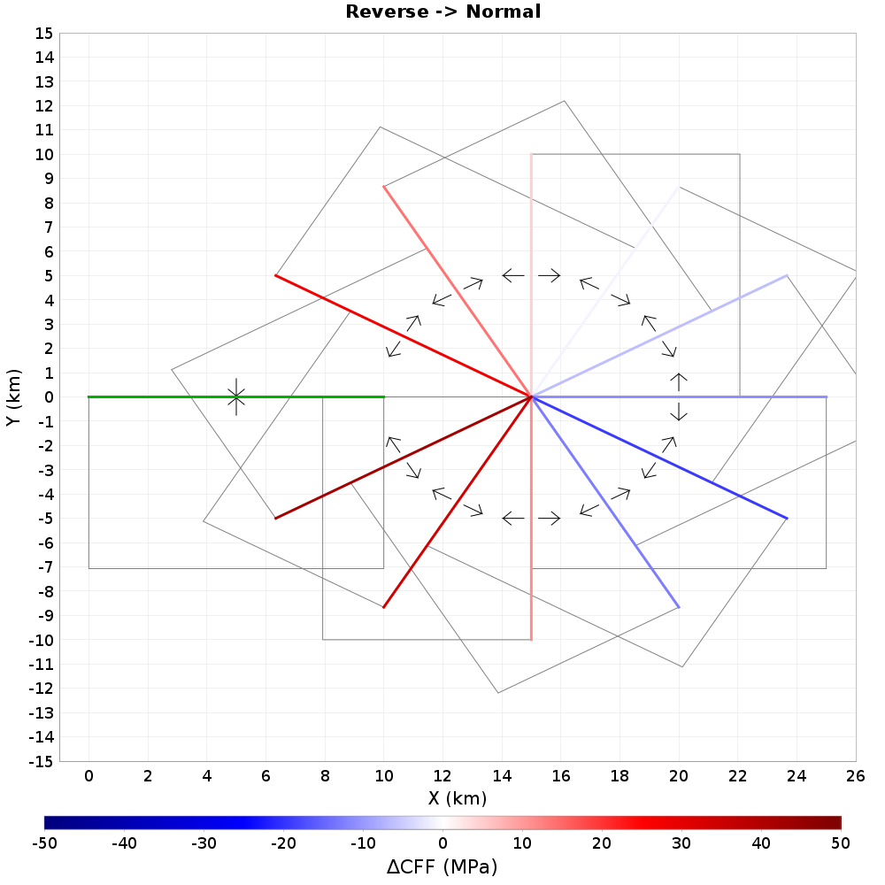
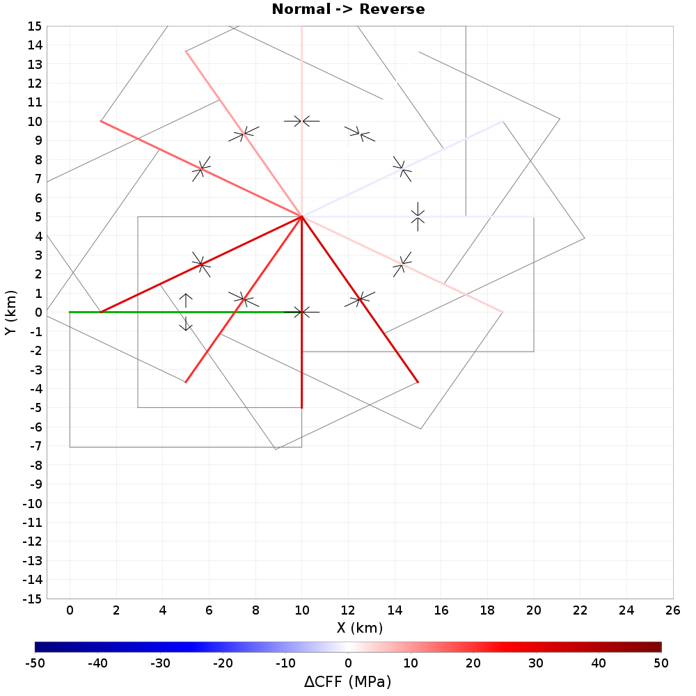
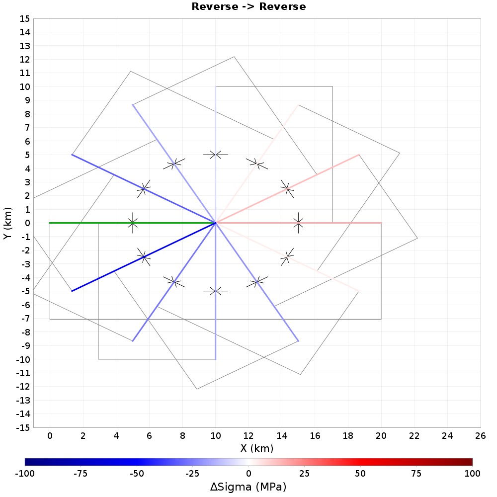

Coulomb Cartoons
Summary
End-to-End
| Source | To Right-Lateral Strike-Slip | To Left-Lateral Strike-Slip | To Reverse | To Normal |
|---|---|---|---|---|
| Right-Lateral Strike-Slip |  |  | ||
| Left-Lateral Strike-Slip |  | |||
| Reverse |  |  |  | |
| Normal |  |
Offset X=5km
| Source | To Right-Lateral Strike-Slip | To Left-Lateral Strike-Slip | To Reverse | To Normal |
|---|---|---|---|---|
| Right-Lateral Strike-Slip | ||||
| Left-Lateral Strike-Slip |  |  | ||
| Reverse |  |  | ||
| Normal |  |  |
Offset Y=5km
| Source | To Right-Lateral Strike-Slip | To Left-Lateral Strike-Slip | To Reverse | To Normal |
|---|---|---|---|---|
| Right-Lateral Strike-Slip |  |  |  | |
| Left-Lateral Strike-Slip |  |  | ||
| Reverse | ||||
| Normal |  |  |  |
Offset X&Y=√5km
| Source | To Right-Lateral Strike-Slip | To Left-Lateral Strike-Slip | To Reverse | To Normal |
|---|---|---|---|---|
| Right-Lateral Strike-Slip |  |  |  | |
| Left-Lateral Strike-Slip |  |  |  | |
| Reverse | ||||
| Normal |  |
End-to-End
Right-Lateral Strike-Slip, End-to-End
Right-Lateral Strike-Slip -> Right-Lateral Strike-Slip, End-to-End
| ΔTau | ΔSigma |
|---|---|
 |  |
| Azimuth Change | ΔCFF | ΔCFF/Max | ΔTau | ΔTau/Max | ΔSigma | ΔSigma/Max |
|---|---|---|---|---|---|---|
| -150 | -305.7959 | -1.3795857 | -221.0194 | -1.5601209 | 169.55302 | -1.3910389 |
| -120 | -181.67831 | -0.8196343 | -71.76194 | -0.92689323 | 219.83275 | -0.82643884 |
| -90 | -55.979847 | -0.25255078 | 47.420578 | -0.28560007 | 206.80086 | -0.25464743 |
| -60 | 55.074665 | 0.24846709 | 132.44809 | 0.280982 | 154.74686 | 0.25052986 |
| -30 | 139.94524 | 0.63135725 | 180.80151 | 0.7139779 | 81.71254 | 0.6365987 |
| 0 | 196.00781 | 0.8842812 | 196.00781 | 1.0 | 2.4504767E-14 | 0.8916225 |
| 30 | 221.65778 | 1.0 | 180.80151 | 1.1308619 | -81.71254 | 1.0083019 |
| 60 | 209.82152 | 0.9466012 | 132.44809 | 1.0704753 | -154.74686 | 0.95445985 |
| 90 | 150.821 | 0.6804228 | 47.420578 | 0.76946425 | -206.80086 | 0.6860716 |
| 120 | 38.15443 | 0.17213216 | -71.76194 | 0.19465771 | -219.83275 | 0.17356119 |
| 150 | -136.24289 | -0.6146542 | -221.0194 | -0.69508904 | -169.55302 | -0.619757 |
Right-Lateral Strike-Slip -> Left-Lateral Strike-Slip, End-to-End
| ΔTau | ΔSigma |
|---|---|
 |  |
| Azimuth Change | ΔCFF | ΔCFF/Max | ΔTau | ΔTau/Max | ΔSigma | ΔSigma/Max |
|---|---|---|---|---|---|---|
| -150 | 136.24289 | 0.44553536 | 221.0194 | 0.61642957 | 169.55302 | 0.619757 |
| -120 | -38.15443 | -0.1247709 | 71.76194 | -0.17262934 | 219.83275 | -0.17356119 |
| -90 | -150.821 | -0.49320805 | -47.420578 | -0.68238807 | 206.80086 | -0.6860716 |
| -60 | -209.82152 | -0.6861489 | -132.44809 | -0.94933534 | 154.74686 | -0.95445985 |
| -30 | -221.65778 | -0.7248553 | -180.80151 | -1.0028883 | 81.71254 | -1.0083019 |
| 0 | -196.00781 | -0.64097595 | -196.00781 | -0.88683534 | 2.4504767E-14 | -0.8916225 |
| 30 | -139.94524 | -0.4576426 | -180.80151 | -0.6331808 | -81.71254 | -0.6365987 |
| 60 | -55.074665 | -0.18010269 | -132.44809 | -0.24918476 | -154.74686 | -0.25052986 |
| 90 | 55.979847 | 0.18306278 | -47.420578 | 0.25328025 | -206.80086 | 0.25464743 |
| 120 | 181.67831 | 0.5941163 | 71.76194 | 0.8220017 | -219.83275 | 0.82643884 |
| 150 | 305.7959 | 1.0 | 221.0194 | 1.3835704 | -169.55302 | 1.3910389 |
Right-Lateral Strike-Slip -> Reverse, End-to-End
| ΔTau | ΔSigma |
|---|---|
 |
| Azimuth Change | ΔCFF | ΔCFF/Max | ΔTau | ΔTau/Max | ΔSigma | ΔSigma/Max |
|---|---|---|---|---|---|---|
| -150 | 22.22841 | 0.7758908 | 41.293438 | 0.40625617 | 38.130054 | 0.42638108 |
| -120 | 28.64889 | 1.0 | 54.715256 | 0.5235997 | 52.132732 | 0.5495375 |
| -90 | 23.923248 | 0.8350498 | 48.13761 | 0.43723178 | 48.428722 | 0.45889115 |
| -60 | 13.254499 | 0.4626532 | 29.850706 | 0.24224505 | 33.192413 | 0.25424525 |
| -30 | 1.7620552 | 0.061505184 | 8.215562 | 0.03220409 | 12.907013 | 0.033799402 |
| 0 | -6.5521293 | -0.22870448 | -9.972398 | -0.11974959 | -6.8405366 | -0.12568168 |
| 30 | -9.418532 | -0.32875735 | -20.499477 | -0.17213723 | -22.161888 | -0.18066448 |
| 60 | -6.956251 | -0.2428105 | -22.50705 | -0.1271355 | -31.101597 | -0.13343346 |
| 90 | -6.681712 | -0.23322761 | -25.80634 | -0.1221179 | -38.249252 | -0.12816732 |
| 120 | -15.482885 | -0.5404358 | -50.065468 | -0.282972 | -50.71562 | -0.2969897 |
| 150 | -30.926355 | -1.0794958 | -65.17086 | -0.56522363 | -68.48901 | -0.5932234 |
Right-Lateral Strike-Slip -> Normal, End-to-End
| ΔTau | ΔSigma |
|---|---|
 |
| Azimuth Change | ΔCFF | ΔCFF/Max | ΔTau | ΔTau/Max | ΔSigma | ΔSigma/Max |
|---|---|---|---|---|---|---|
| -150 | -60.358467 | -0.60713416 | -41.293438 | -0.92615724 | 38.130054 | -1.1577845 |
| -120 | -80.781624 | -0.81256676 | -54.715256 | -1.2395359 | 52.132732 | -1.5495374 |
| -90 | -72.351974 | -0.72777456 | -48.13761 | -1.110189 | 48.428722 | -1.3878416 |
| -60 | -46.446915 | -0.46720055 | -29.850706 | -0.7126945 | 33.192413 | -0.8909357 |
| -30 | -14.669068 | -0.14755332 | -8.215562 | -0.2250863 | 12.907013 | -0.28137922 |
| 0 | 13.392666 | 0.13471425 | 9.972398 | 0.20550083 | -6.8405366 | 0.25689554 |
| 30 | 31.580421 | 0.31766135 | 20.499477 | 0.48457885 | -22.161888 | 0.6057695 |
| 60 | 38.057846 | 0.38281652 | 22.50705 | 0.5839703 | -31.101597 | 0.73001826 |
| 90 | 44.930965 | 0.4519519 | 25.80634 | 0.68943334 | -38.249252 | 0.8618571 |
| 120 | 85.3696 | 0.8587163 | 50.065468 | 1.3099351 | -50.71562 | 1.6375431 |
| 150 | 99.41537 | 1.0 | 65.17086 | 1.5254574 | -68.48901 | 1.9069664 |
Left-Lateral Strike-Slip, End-to-End
Left-Lateral Strike-Slip -> Right-Lateral Strike-Slip, End-to-End
| ΔTau | ΔSigma |
|---|---|
 |
| Azimuth Change | ΔCFF | ΔCFF/Max | ΔTau | ΔTau/Max | ΔSigma | ΔSigma/Max |
|---|---|---|---|---|---|---|
| -150 | 305.7959 | 1.0 | 221.0194 | 1.3835704 | -169.55302 | 1.3910389 |
| -120 | 181.67831 | 0.5941163 | 71.76194 | 0.8220017 | -219.83275 | 0.82643884 |
| -90 | 55.979847 | 0.18306278 | -47.420578 | 0.25328025 | -206.80086 | 0.25464743 |
| -60 | -55.074665 | -0.18010269 | -132.44809 | -0.24918476 | -154.74686 | -0.25052986 |
| -30 | -139.94524 | -0.4576426 | -180.80151 | -0.6331808 | -81.71254 | -0.6365987 |
| 0 | -196.00781 | -0.64097595 | -196.00781 | -0.88683534 | -2.4504767E-14 | -0.8916225 |
| 30 | -221.65778 | -0.7248553 | -180.80151 | -1.0028883 | 81.71254 | -1.0083019 |
| 60 | -209.82152 | -0.6861489 | -132.44809 | -0.94933534 | 154.74686 | -0.95445985 |
| 90 | -150.821 | -0.49320805 | -47.420578 | -0.68238807 | 206.80086 | -0.6860716 |
| 120 | -38.15443 | -0.1247709 | 71.76194 | -0.17262934 | 219.83275 | -0.17356119 |
| 150 | 136.24289 | 0.44553536 | 221.0194 | 0.61642957 | 169.55302 | 0.619757 |
Left-Lateral Strike-Slip -> Left-Lateral Strike-Slip, End-to-End
| ΔTau | ΔSigma |
|---|---|
 |
| Azimuth Change | ΔCFF | ΔCFF/Max | ΔTau | ΔTau/Max | ΔSigma | ΔSigma/Max |
|---|---|---|---|---|---|---|
| -150 | -136.24289 | -0.6146542 | -221.0194 | -0.69508904 | -169.55302 | -0.619757 |
| -120 | 38.15443 | 0.17213216 | -71.76194 | 0.19465771 | -219.83275 | 0.17356119 |
| -90 | 150.821 | 0.6804228 | 47.420578 | 0.76946425 | -206.80086 | 0.6860716 |
| -60 | 209.82152 | 0.9466012 | 132.44809 | 1.0704753 | -154.74686 | 0.95445985 |
| -30 | 221.65778 | 1.0 | 180.80151 | 1.1308619 | -81.71254 | 1.0083019 |
| 0 | 196.00781 | 0.8842812 | 196.00781 | 1.0 | -2.4504767E-14 | 0.8916225 |
| 30 | 139.94524 | 0.63135725 | 180.80151 | 0.7139779 | 81.71254 | 0.6365987 |
| 60 | 55.074665 | 0.24846709 | 132.44809 | 0.280982 | 154.74686 | 0.25052986 |
| 90 | -55.979847 | -0.25255078 | 47.420578 | -0.28560007 | 206.80086 | -0.25464743 |
| 120 | -181.67831 | -0.8196343 | -71.76194 | -0.92689323 | 219.83275 | -0.82643884 |
| 150 | -305.7959 | -1.3795857 | -221.0194 | -1.5601209 | 169.55302 | -1.3910389 |
Left-Lateral Strike-Slip -> Reverse, End-to-End
| ΔTau | ΔSigma |
|---|---|
 |
| Azimuth Change | ΔCFF | ΔCFF/Max | ΔTau | ΔTau/Max | ΔSigma | ΔSigma/Max |
|---|---|---|---|---|---|---|
| -150 | -22.22841 | -0.71875304 | -41.293438 | -0.34107897 | -38.130054 | -0.3245544 |
| -120 | -28.64889 | -0.9263584 | -54.715256 | -0.4395966 | -52.132732 | -0.41829905 |
| -90 | -23.923248 | -0.7735554 | -48.13761 | -0.36708504 | -48.428722 | -0.34930053 |
| -60 | -13.254499 | -0.42858267 | -29.850706 | -0.20338076 | -33.192413 | -0.19352739 |
| -30 | -1.7620552 | -0.056975845 | -8.215562 | -0.02703747 | -12.907013 | -0.025727559 |
| 0 | 6.5521293 | 0.21186233 | 9.972398 | 0.10053771 | 6.8405366 | 0.09566686 |
| 30 | 9.418532 | 0.30454713 | 20.499477 | 0.14452061 | 22.161888 | 0.13751888 |
| 60 | 6.956251 | 0.22492956 | 22.50705 | 0.10673867 | 31.101597 | 0.1015674 |
| 90 | 6.681712 | 0.21605237 | 25.80634 | 0.10252607 | 38.249252 | 0.097558886 |
| 120 | 15.482885 | 0.50063723 | 50.065468 | 0.23757374 | 50.71562 | 0.22606379 |
| 150 | 30.926355 | 1.0 | 65.17086 | 0.47454268 | 68.48901 | 0.45155206 |
Left-Lateral Strike-Slip -> Normal, End-to-End
| ΔTau | ΔSigma |
|---|---|
 |
| Azimuth Change | ΔCFF | ΔCFF/Max | ΔTau | ΔTau/Max | ΔSigma | ΔSigma/Max |
|---|---|---|---|---|---|---|
| -150 | 60.358467 | 0.7471807 | 41.293438 | 1.1031379 | -38.130054 | 0.88128686 |
| -120 | 80.781624 | 1.0 | 54.715256 | 1.4764004 | -52.132732 | 1.1794829 |
| -90 | 72.351974 | 0.89564896 | 48.13761 | 1.3223364 | -48.428722 | 1.0564026 |
| -60 | 46.446915 | 0.5749688 | 29.850706 | 0.84888417 | -33.192413 | 0.6781659 |
| -30 | 14.669068 | 0.18158917 | 8.215562 | 0.26809832 | -12.907013 | 0.21418133 |
| 0 | -13.392666 | -0.16578853 | -9.972398 | -0.24477024 | 6.8405366 | -0.19554473 |
| 30 | -31.580421 | -0.39093572 | -20.499477 | -0.57717764 | 22.161888 | -0.461102 |
| 60 | -38.057846 | -0.47112012 | -22.50705 | -0.6955619 | 31.101597 | -0.5556781 |
| 90 | -44.930965 | -0.5562028 | -25.80634 | -0.821178 | 38.249252 | -0.6560317 |
| 120 | -85.3696 | -1.0567948 | -50.065468 | -1.5602522 | 50.71562 | -1.2464714 |
| 150 | -99.41537 | -1.2306682 | -65.17086 | -1.8169589 | 68.48901 | -1.451552 |
Reverse, End-to-End
Reverse -> Right-Lateral Strike-Slip, End-to-End
| ΔTau | ΔSigma |
|---|---|
 |  |
| Azimuth Change | ΔCFF | ΔCFF/Max | ΔTau | ΔTau/Max | ΔSigma | ΔSigma/Max |
|---|---|---|---|---|---|---|
| -150 | 3.7804825 | 0.034557715 | -42.20473 | 0.06390732 | -91.97043 | 0.11219657 |
| -120 | -31.270477 | -0.28584614 | -53.902233 | -0.52861303 | -45.263508 | -0.9280404 |
| -90 | -43.055237 | -0.39357165 | -46.037212 | -0.727829 | -5.963951 | -1.2777867 |
| -60 | -37.770306 | -0.34526163 | -27.489265 | -0.63848966 | 20.562082 | -1.1209413 |
| -30 | -22.870602 | -0.20906214 | -6.265241 | -0.38661698 | 33.21072 | -0.67875016 |
| 0 | -5.1419706 | -0.0470032 | 11.705614 | -0.086922646 | 33.695168 | -0.15260261 |
| 30 | 10.360226 | 0.09470372 | 22.784029 | 0.17513484 | 24.847607 | 0.30746916 |
| 60 | 21.241728 | 0.19417247 | 26.192266 | 0.35908163 | 9.901079 | 0.6304087 |
| 90 | 9.517719 | 0.08700229 | -566.72894 | 0.16089267 | -11.42846 | 0.2824654 |
| 120 | 71.99824 | 0.6581421 | 52.793804 | 1.217097 | -47.5112 | 2.1367526 |
| 150 | 109.39619 | 1.0 | 59.15571 | 1.8492922 | -112.62998 | 3.246643 |
Reverse -> Left-Lateral Strike-Slip, End-to-End
| ΔTau | ΔSigma |
|---|---|
 |
| Azimuth Change | ΔCFF | ΔCFF/Max | ΔTau | ΔTau/Max | ΔSigma | ΔSigma/Max |
|---|---|---|---|---|---|---|
| -150 | 88.18995 | 1.0 | 42.20473 | 0.1556122 | -91.97043 | 2.6172876 |
| -120 | 76.53399 | 0.86783123 | 53.902233 | 0.13504513 | -45.263508 | 2.2713637 |
| -90 | 49.01919 | 0.5558365 | 46.037212 | 0.086494945 | -5.963951 | 1.4547839 |
| -60 | 17.208223 | 0.19512683 | 27.489265 | 0.030364115 | 20.562082 | 0.510703 |
| -30 | -10.340118 | -0.11724827 | 6.265241 | -0.018245261 | 33.21072 | -0.30687243 |
| 0 | -28.553198 | -0.3237693 | -11.705614 | -0.050382458 | 33.695168 | -0.8473974 |
| 30 | -35.207832 | -0.39922726 | -22.784029 | -0.062124636 | 24.847607 | -1.0448925 |
| 60 | -31.142807 | -0.3531333 | -26.192266 | -0.054951854 | 9.901079 | -0.9242514 |
| 90 | 1.3067591 | 0.014817552 | 566.72894 | 0.002305792 | -11.42846 | 0.038781792 |
| 120 | -29.038206 | -0.3292689 | -52.793804 | -0.05123826 | -47.5112 | -0.8617914 |
| 150 | -2.8407152 | -0.032211326 | -59.15571 | -0.0050124754 | -112.62998 | -0.08430631 |
Reverse -> Reverse, End-to-End
| ΔTau | ΔSigma |
|---|---|
 |  |
| Azimuth Change | ΔCFF | ΔCFF/Max | ΔTau | ΔTau/Max | ΔSigma | ΔSigma/Max |
|---|---|---|---|---|---|---|
| -150 | -33.153423 | -0.2947353 | -48.991135 | -0.27407432 | -31.675428 | -1.9548763 |
| -120 | -18.602901 | -0.16538058 | -27.682064 | -0.15378737 | -18.158325 | -1.0969117 |
| -90 | -7.6332164 | -0.06785961 | -11.048549 | -0.06310265 | -6.8306646 | -0.45008913 |
| -60 | 2.3261871 | 0.0206799 | 3.9613736 | 0.019230235 | 3.2703733 | 0.13716255 |
| -30 | 19.64464 | 0.17464167 | 26.005316 | 0.16239926 | 12.721352 | 1.1583372 |
| 0 | 112.485405 | 1.0 | 120.96508 | 0.9298998 | 16.959345 | 6.6326504 |
| 30 | -5.5593944 | -0.049423248 | -23.162773 | -0.04595867 | 3.3566597 | -0.32780713 |
| 60 | -14.588547 | -0.1296928 | -25.35306 | -0.120601304 | -21.529024 | -0.86020696 |
| 90 | -34.81493 | -0.30950618 | -43.926506 | -0.28780976 | -18.223148 | -2.0528464 |
| 120 | -71.23399 | -0.63327324 | -84.75756 | -0.58888066 | -27.047121 | -4.20028 |
| 150 | -67.07974 | -0.5963417 | -93.21824 | -0.5545381 | -52.27699 | -3.9553263 |
Reverse -> Normal, End-to-End
| ΔTau | ΔSigma |
|---|---|
 |
| Azimuth Change | ΔCFF | ΔCFF/Max | ΔTau | ΔTau/Max | ΔSigma | ΔSigma/Max |
|---|---|---|---|---|---|---|
| -150 | 64.82885 | 0.5543729 | 48.991135 | 0.69545245 | -31.675428 | 3.8226035 |
| -120 | 36.761227 | 0.3143574 | 27.682064 | 0.3943566 | -18.158325 | 2.167609 |
| -90 | 14.4638815 | 0.123685434 | 11.048549 | 0.1551615 | -6.8306646 | 0.85285616 |
| -60 | -5.5965605 | -0.047858037 | -3.9613736 | -0.06003718 | 3.2703733 | -0.3299986 |
| -30 | -32.36599 | -0.2767723 | -26.005316 | -0.34720662 | 12.721352 | -1.9084458 |
| 0 | -129.44475 | -1.1069249 | -120.96508 | -1.3886205 | 16.959345 | -7.6326504 |
| 30 | 18.91568 | 0.16175424 | 23.162773 | 0.20291823 | 3.3566597 | 1.1153544 |
| 60 | 36.117573 | 0.3088533 | 25.35306 | 0.38745177 | -21.529024 | 2.129656 |
| 90 | 53.03808 | 0.45354617 | 43.926506 | 0.56896675 | -18.223148 | 3.127366 |
| 120 | 98.28112 | 0.8404343 | 84.75756 | 1.0543121 | -27.047121 | 5.795101 |
| 150 | 116.940865 | 1.0 | 93.21824 | 1.2544848 | -52.27699 | 6.8953648 |
Normal, End-to-End
Normal -> Right-Lateral Strike-Slip, End-to-End
| ΔTau | ΔSigma |
|---|---|
 |
| Azimuth Change | ΔCFF | ΔCFF/Max | ΔTau | ΔTau/Max | ΔSigma | ΔSigma/Max |
|---|---|---|---|---|---|---|
| -150 | -3.7804825 | -0.0878054 | 42.20473 | -0.006670706 | 91.97043 | -0.033565506 |
| -120 | 31.270477 | 0.7262874 | 53.902233 | 0.05517713 | 45.263508 | 0.27763903 |
| -90 | 43.055237 | 1.0 | 46.037212 | 0.07597148 | 5.963951 | 0.38227156 |
| -60 | 37.770306 | 0.8772523 | 27.489265 | 0.06664615 | -20.562082 | 0.33534858 |
| -30 | 22.870602 | 0.53119206 | 6.265241 | 0.040355448 | -33.21072 | 0.20305961 |
| 0 | 5.1419706 | 0.11942729 | -11.705614 | 0.009073068 | -33.695168 | 0.045653656 |
| 30 | -10.360226 | -0.24062636 | -22.784029 | -0.01828074 | -24.847607 | -0.091984615 |
| 60 | -21.241728 | -0.4933599 | -26.192266 | -0.037481282 | -9.901079 | -0.18859746 |
| 90 | -9.517719 | -0.22105832 | 566.72894 | -0.016794128 | 11.42846 | -0.084504314 |
| 120 | -71.99824 | -1.6722294 | -52.793804 | -0.12704174 | 47.5112 | -0.63924575 |
| 150 | -109.39619 | -2.5408335 | -59.15571 | -0.19303088 | 112.62998 | -0.9712883 |
Normal -> Left-Lateral Strike-Slip, End-to-End
| ΔTau | ΔSigma |
|---|---|
 |
| Azimuth Change | ΔCFF | ΔCFF/Max | ΔTau | ΔTau/Max | ΔSigma | ΔSigma/Max |
|---|---|---|---|---|---|---|
| -150 | -88.18995 | -2.504839 | -42.20473 | -1.4908104 | 91.97043 | -0.78300595 |
| -120 | -76.53399 | -2.1737773 | -53.902233 | -1.2937719 | 45.263508 | -0.679517 |
| -90 | -49.01919 | -1.3922808 | -46.037212 | -0.82864684 | 5.963951 | -0.43522328 |
| -60 | -17.208223 | -0.48876125 | -27.489265 | -0.2908971 | -20.562082 | -0.15278547 |
| -30 | 10.340118 | 0.29368803 | -6.265241 | 0.17479494 | -33.21072 | 0.09180609 |
| 0 | 28.553198 | 0.81099 | 11.705614 | 0.48267868 | -33.695168 | 0.2535133 |
| 30 | 35.207832 | 1.0 | 22.784029 | 0.59517217 | -24.847607 | 0.31259733 |
| 60 | 31.142807 | 0.88454205 | 26.192266 | 0.5264548 | -9.901079 | 0.27650547 |
| 90 | -1.3067591 | -0.037115578 | -566.72894 | -0.022090161 | 11.42846 | -0.01160223 |
| 120 | 29.038206 | 0.82476556 | 52.793804 | 0.4908775 | 47.5112 | 0.2578195 |
| 150 | 2.8407152 | 0.080684185 | 59.15571 | 0.04802098 | 112.62998 | 0.02522166 |
Normal -> Reverse, End-to-End
| ΔTau | ΔSigma |
|---|---|
| Azimuth Change | ΔCFF | ΔCFF/Max | ΔTau | ΔTau/Max | ΔSigma | ΔSigma/Max |
|---|---|---|---|---|---|---|
| -150 | 33.153423 | 0.46541572 | 48.991135 | 0.35565382 | 31.675428 | 0.63418764 |
| -120 | 18.602901 | 0.26115203 | 27.682064 | 0.1995629 | 18.158325 | 0.35585257 |
| -90 | 7.6332164 | 0.10715693 | 11.048549 | 0.08188544 | 6.8306646 | 0.14601484 |
| -60 | -2.3261871 | -0.032655574 | -3.9613736 | -0.024954205 | -3.2703733 | -0.04449734 |
| -30 | -19.64464 | -0.27577618 | -26.005316 | -0.21073815 | -12.721352 | -0.37577984 |
| 0 | -112.485405 | -1.5790973 | -120.96508 | -1.2066889 | -16.959345 | -2.1517193 |
| 30 | 5.5593944 | 0.07804412 | 23.162773 | 0.05963848 | -3.3566597 | 0.10634495 |
| 60 | 14.588547 | 0.20479754 | 25.35306 | 0.15649885 | 21.529024 | 0.27906248 |
| 90 | 34.81493 | 0.48874038 | 43.926506 | 0.37347767 | 18.223148 | 0.66597044 |
| 120 | 71.23399 | 1.0 | 84.75756 | 0.76416373 | 27.047121 | 1.3626262 |
| 150 | 67.07974 | 0.94168156 | 93.21824 | 0.7195989 | 52.27699 | 1.28316 |
Normal -> Normal, End-to-End
| ΔTau | ΔSigma |
|---|---|
 |  |
| Azimuth Change | ΔCFF | ΔCFF/Max | ΔTau | ΔTau/Max | ΔSigma | ΔSigma/Max |
|---|---|---|---|---|---|---|
| -150 | -64.82885 | -0.50082254 | -48.991135 | -0.5359303 | 31.675428 | -1.240103 |
| -120 | -36.761227 | -0.28399163 | -27.682064 | -0.3038995 | 18.158325 | -0.7032009 |
| -90 | -14.4638815 | -0.11173787 | -11.048549 | -0.11957072 | 6.8306646 | -0.27667776 |
| -60 | 5.5965605 | 0.043235127 | 3.9613736 | 0.046265915 | -3.2703733 | 0.1070559 |
| -30 | 32.36599 | 0.2500371 | 26.005316 | 0.26756474 | -12.721352 | 0.619125 |
| 0 | 129.44475 | 1.0 | 120.96508 | 1.0701002 | -16.959345 | 2.4761324 |
| 30 | -18.91568 | -0.14612937 | -23.162773 | -0.15637307 | -3.3566597 | -0.36183566 |
| 60 | -36.117573 | -0.2790192 | -25.35306 | -0.2985785 | 21.529024 | -0.6908885 |
| 90 | -53.03808 | -0.40973526 | -43.926506 | -0.43845776 | 18.223148 | -1.0145588 |
| 120 | -98.28112 | -0.7592515 | -84.75756 | -0.81247514 | 27.047121 | -1.8800071 |
| 150 | -116.940865 | -0.90340364 | -93.21824 | -0.96673244 | 52.27699 | -2.236947 |
Offset X=5km
Right-Lateral Strike-Slip, Offset X=5km
Right-Lateral Strike-Slip -> Right-Lateral Strike-Slip, Offset X=5km
| ΔTau | ΔSigma |
|---|---|
 |
| Azimuth Change | ΔCFF | ΔCFF/Max | ΔTau | ΔTau/Max | ΔSigma | ΔSigma/Max |
|---|---|---|---|---|---|---|
| -150 | -83.2861 | -2.1253984 | -34.22566 | -3.4376512 | 98.120895 | -0.8488111 |
| -120 | -45.869953 | -1.1705666 | -4.8424425 | -1.8932918 | 82.05502 | -0.46748406 |
| -90 | -19.098356 | -0.48737562 | 10.0438795 | -0.7882886 | 58.284473 | -0.19464108 |
| -60 | 0.08398308 | 0.0021431847 | 18.314104 | 0.0034664187 | 36.46024 | 8.559143E-4 |
| -30 | 14.766136 | 0.3768206 | 24.22762 | 0.6094753 | 18.922968 | 0.15048921 |
| 0 | 22.977808 | 0.5863763 | 22.977808 | 0.9484138 | 2.7428348E-15 | 0.23417854 |
| 30 | 33.689102 | 0.8597204 | 24.22762 | 1.3905247 | -18.922968 | 0.3433428 |
| 60 | 36.544224 | 0.93258095 | 18.314104 | 1.5083704 | -36.46024 | 0.3724408 |
| 90 | 39.186115 | 1.0 | 10.0438795 | 1.617415 | -58.284473 | 0.39936566 |
| 120 | 36.18507 | 0.92341554 | -4.8424425 | 1.4935461 | -82.05502 | 0.36878046 |
| 150 | 14.83479 | 0.3785726 | -34.22566 | 0.61230904 | -98.120895 | 0.1511889 |
Right-Lateral Strike-Slip -> Left-Lateral Strike-Slip, Offset X=5km
| ΔTau | ΔSigma |
|---|---|
 |
| Azimuth Change | ΔCFF | ΔCFF/Max | ΔTau | ΔTau/Max | ΔSigma | ΔSigma/Max |
|---|---|---|---|---|---|---|
| -150 | -14.83479 | -0.17811844 | 34.22566 | -0.43344063 | 98.120895 | -0.1511889 |
| -120 | -36.18507 | -0.43446705 | 4.8424425 | -1.0572498 | 82.05502 | -0.36878046 |
| -90 | -39.186115 | -0.47050002 | -10.0438795 | -1.1449339 | 58.284473 | -0.39936566 |
| -60 | -36.544224 | -0.43877935 | -18.314104 | -1.0677435 | 36.46024 | -0.3724408 |
| -30 | -33.689102 | -0.4044985 | -24.22762 | -0.9843231 | 18.922968 | -0.3433428 |
| 0 | -22.977808 | -0.27589005 | -22.977808 | -0.6713621 | 2.7428348E-15 | -0.23417854 |
| 30 | -14.766136 | -0.1772941 | -24.22762 | -0.4314347 | -18.922968 | -0.15048921 |
| 60 | -0.08398308 | -0.0010083684 | -18.314104 | -0.0024538047 | -36.46024 | -8.559143E-4 |
| 90 | 19.098356 | 0.22931024 | -10.0438795 | 0.55801284 | -58.284473 | 0.19464108 |
| 120 | 45.869953 | 0.55075157 | 4.8424425 | 1.3402213 | -82.05502 | 0.46748406 |
| 150 | 83.2861 | 1.0 | 34.22566 | 2.4334407 | -98.120895 | 0.8488111 |
Right-Lateral Strike-Slip -> Reverse, Offset X=5km
| ΔTau | ΔSigma |
|---|---|
| Azimuth Change | ΔCFF | ΔCFF/Max | ΔTau | ΔTau/Max | ΔSigma | ΔSigma/Max |
|---|---|---|---|---|---|---|
| -150 | 21.536634 | 1.0 | 38.021603 | 0.5664315 | 32.969936 | 0.6532204 |
| -120 | 16.690538 | 0.77498364 | 28.780327 | 0.43897516 | 24.179577 | 0.5062351 |
| -90 | 10.668185 | 0.49535063 | 18.657389 | 0.28058222 | 15.978406 | 0.32357314 |
| -60 | 5.8104463 | 0.26979363 | 10.856126 | 0.15281962 | 10.091359 | 0.17623469 |
| -30 | 2.708862 | 0.12577927 | 6.1938405 | 0.07124534 | 6.9699564 | 0.08216158 |
| 0 | 0.06048698 | 0.0028085622 | 1.739217 | 0.0015908582 | 3.35746 | 0.0018346102 |
| 30 | -2.8004918 | -0.13003387 | -3.9477754 | -0.073655285 | -2.2945669 | -0.084940776 |
| 60 | -6.982453 | -0.32421282 | -16.582924 | -0.18364437 | -19.200943 | -0.21178243 |
| 90 | -16.481066 | -0.7652573 | -57.849304 | -0.43346587 | -82.73647 | -0.49988165 |
| 120 | -10.845319 | -0.5035754 | -40.9649 | -0.28524098 | -41.778652 | -0.32894573 |
| 150 | -15.641205 | -0.7262604 | -38.06134 | -0.4113768 | -44.840267 | -0.47440812 |
Right-Lateral Strike-Slip -> Normal, Offset X=5km
| ΔTau | ΔSigma |
|---|---|
 |
| Azimuth Change | ΔCFF | ΔCFF/Max | ΔTau | ΔTau/Max | ΔSigma | ΔSigma/Max |
|---|---|---|---|---|---|---|
| -150 | -54.50657 | -0.5493642 | -38.021603 | -0.9422165 | 32.969936 | -1.6532204 |
| -120 | -40.870117 | -0.4119243 | -28.780327 | -0.7064928 | 24.179577 | -1.2396177 |
| -90 | -26.646591 | -0.26856732 | -18.657389 | -0.46062076 | 15.978406 | -0.8082088 |
| -60 | -15.901806 | -0.16027212 | -10.856126 | -0.27488327 | 10.091359 | -0.48231232 |
| -30 | -9.678819 | -0.09755149 | -6.1938405 | -0.1673109 | 6.9699564 | -0.293565 |
| 0 | -3.417947 | -0.03444902 | -1.739217 | -0.059083633 | 3.35746 | -0.1036686 |
| 30 | 5.095059 | 0.051352397 | 3.9477754 | 0.08807468 | -2.2945669 | 0.15453652 |
| 60 | 26.183397 | 0.26389885 | 16.582924 | 0.45261386 | -19.200943 | 0.79415977 |
| 90 | 99.217545 | 1.0 | 57.849304 | 1.7151035 | -82.73647 | 3.0093338 |
| 120 | 71.767395 | 0.7233337 | 40.9649 | 1.2405921 | -41.778652 | 2.1767526 |
| 150 | 60.481476 | 0.60958445 | 38.06134 | 1.0455004 | -44.840267 | 1.8344432 |
Left-Lateral Strike-Slip, Offset X=5km
Left-Lateral Strike-Slip -> Right-Lateral Strike-Slip, Offset X=5km
| ΔTau | ΔSigma |
|---|---|
 |
| Azimuth Change | ΔCFF | ΔCFF/Max | ΔTau | ΔTau/Max | ΔSigma | ΔSigma/Max |
|---|---|---|---|---|---|---|
| -150 | 83.2861 | 1.0 | 34.22566 | 2.4334407 | -98.120895 | 0.8488111 |
| -120 | 45.869953 | 0.55075157 | 4.8424425 | 1.3402213 | -82.05502 | 0.46748406 |
| -90 | 19.098356 | 0.22931024 | -10.0438795 | 0.55801284 | -58.284473 | 0.19464108 |
| -60 | -0.08398308 | -0.0010083684 | -18.314104 | -0.0024538047 | -36.46024 | -8.559143E-4 |
| -30 | -14.766136 | -0.1772941 | -24.22762 | -0.4314347 | -18.922968 | -0.15048921 |
| 0 | -22.977808 | -0.27589005 | -22.977808 | -0.6713621 | -2.7428348E-15 | -0.23417854 |
| 30 | -33.689102 | -0.4044985 | -24.22762 | -0.9843231 | 18.922968 | -0.3433428 |
| 60 | -36.544224 | -0.43877935 | -18.314104 | -1.0677435 | 36.46024 | -0.3724408 |
| 90 | -39.186115 | -0.47050002 | -10.0438795 | -1.1449339 | 58.284473 | -0.39936566 |
| 120 | -36.18507 | -0.43446705 | 4.8424425 | -1.0572498 | 82.05502 | -0.36878046 |
| 150 | -14.83479 | -0.17811844 | 34.22566 | -0.43344063 | 98.120895 | -0.1511889 |
Left-Lateral Strike-Slip -> Left-Lateral Strike-Slip, Offset X=5km
| ΔTau | ΔSigma |
|---|---|
 |
| Azimuth Change | ΔCFF | ΔCFF/Max | ΔTau | ΔTau/Max | ΔSigma | ΔSigma/Max |
|---|---|---|---|---|---|---|
| -150 | 14.83479 | 0.3785726 | -34.22566 | 0.61230904 | -98.120895 | 0.1511889 |
| -120 | 36.18507 | 0.92341554 | -4.8424425 | 1.4935461 | -82.05502 | 0.36878046 |
| -90 | 39.186115 | 1.0 | 10.0438795 | 1.617415 | -58.284473 | 0.39936566 |
| -60 | 36.544224 | 0.93258095 | 18.314104 | 1.5083704 | -36.46024 | 0.3724408 |
| -30 | 33.689102 | 0.8597204 | 24.22762 | 1.3905247 | -18.922968 | 0.3433428 |
| 0 | 22.977808 | 0.5863763 | 22.977808 | 0.9484138 | -2.7428348E-15 | 0.23417854 |
| 30 | 14.766136 | 0.3768206 | 24.22762 | 0.6094753 | 18.922968 | 0.15048921 |
| 60 | 0.08398308 | 0.0021431847 | 18.314104 | 0.0034664187 | 36.46024 | 8.559143E-4 |
| 90 | -19.098356 | -0.48737562 | 10.0438795 | -0.7882886 | 58.284473 | -0.19464108 |
| 120 | -45.869953 | -1.1705666 | -4.8424425 | -1.8932918 | 82.05502 | -0.46748406 |
| 150 | -83.2861 | -2.1253984 | -34.22566 | -3.4376512 | 98.120895 | -0.8488111 |
Left-Lateral Strike-Slip -> Reverse, Offset X=5km
| ΔTau | ΔSigma |
|---|---|
| Azimuth Change | ΔCFF | ΔCFF/Max | ΔTau | ΔTau/Max | ΔSigma | ΔSigma/Max |
|---|---|---|---|---|---|---|
| -150 | -21.536634 | -1.30675 | -38.021603 | -0.37228855 | -32.969936 | -0.26030397 |
| -120 | -16.690538 | -1.0127099 | -28.780327 | -0.28851753 | -24.179577 | -0.20173132 |
| -90 | -10.668185 | -0.64729947 | -18.657389 | -0.18441337 | -15.978406 | -0.12894173 |
| -60 | -5.8104463 | -0.35255283 | -10.856126 | -0.100441076 | -10.091359 | -0.07022835 |
| -30 | -2.708862 | -0.16436207 | -6.1938405 | -0.046826184 | -6.9699564 | -0.032740846 |
| 0 | -0.06048698 | -0.003670089 | -1.739217 | -0.0010455956 | -3.35746 | -7.3107996E-4 |
| 30 | 2.8004918 | 0.16992177 | 3.9477754 | 0.04841012 | 2.2945669 | 0.033848334 |
| 60 | 6.982453 | 0.42366514 | 16.582924 | 0.120700724 | 19.200943 | 0.08439389 |
| 90 | 16.481066 | 1.0 | 57.849304 | 0.28489652 | 82.73647 | 0.19919951 |
| 120 | 10.845319 | 0.6580472 | 40.9649 | 0.18747535 | 41.778652 | 0.13108268 |
| 150 | 15.641205 | 0.9490409 | 38.06134 | 0.27037844 | 44.840267 | 0.18904848 |
Left-Lateral Strike-Slip -> Normal, Offset X=5km
| ΔTau | ΔSigma |
|---|---|
 |
| Azimuth Change | ΔCFF | ΔCFF/Max | ΔTau | ΔTau/Max | ΔSigma | ΔSigma/Max |
|---|---|---|---|---|---|---|
| -150 | 54.50657 | 1.0 | 38.021603 | 1.4335685 | -32.969936 | 0.6587973 |
| -120 | 40.870117 | 0.74982 | 28.780327 | 1.0749183 | -24.179577 | 0.49397942 |
| -90 | 26.646591 | 0.48886937 | 18.657389 | 0.7008277 | -15.978406 | 0.32206583 |
| -60 | 15.901806 | 0.2917411 | 10.856126 | 0.41823083 | -10.091359 | 0.19219825 |
| -30 | 9.678819 | 0.1775716 | 6.1938405 | 0.25456104 | -6.9699564 | 0.1169837 |
| 0 | 3.417947 | 0.06270707 | 1.739217 | 0.089894876 | -3.35746 | 0.04131125 |
| 30 | -5.095059 | -0.09347605 | -3.9477754 | -0.13400432 | 2.2945669 | -0.06158177 |
| 60 | -26.183397 | -0.4803714 | -16.582924 | -0.6886453 | 19.200943 | -0.31646737 |
| 90 | -99.217545 | -1.8202859 | -57.849304 | -2.6095045 | 82.73647 | -1.1991996 |
| 120 | -71.767395 | -1.3166742 | -40.9649 | -1.8875426 | 41.778652 | -0.86742145 |
| 150 | -60.481476 | -1.1096181 | -38.06134 | -1.5907135 | 44.840267 | -0.7310134 |
Reverse, Offset X=5km
Reverse -> Right-Lateral Strike-Slip, Offset X=5km
| ΔTau | ΔSigma |
|---|---|
 |  |
| Azimuth Change | ΔCFF | ΔCFF/Max | ΔTau | ΔTau/Max | ΔSigma | ΔSigma/Max |
|---|---|---|---|---|---|---|
| -150 | 29.48264 | 1.0 | 7.949507 | 3.5507147 | -43.066265 | 2.1251502 |
| -120 | 6.196469 | 0.21017347 | -6.2679944 | 0.74626607 | -24.928926 | 0.44665024 |
| -90 | -6.377947 | -0.21632889 | -10.837705 | -0.7681222 | -8.919516 | -0.45973143 |
| -60 | -10.923148 | -0.37049425 | -9.7123165 | -1.3155195 | 2.4216635 | -0.78735596 |
| -30 | -11.660428 | -0.3955015 | -6.5839176 | -1.404313 | 10.153021 | -0.8405001 |
| 0 | -7.917592 | -0.268551 | -1.7164224 | -0.953548 | 12.402339 | -0.5707112 |
| 30 | -4.9876294 | -0.16917174 | 1.948972 | -0.6006806 | 13.873202 | -0.35951534 |
| 60 | -1.7648011 | -0.059858993 | 3.398479 | -0.21254222 | 10.32656 | -0.12720935 |
| 90 | -2.0227532 | -0.06860828 | 0.75365406 | -0.24360843 | 5.5528145 | -0.1458029 |
| 120 | -10.4361 | -0.35397443 | -10.11185 | -1.2568623 | 0.64850205 | -0.7522488 |
| 150 | 17.729347 | 0.6013487 | 8.303297 | 2.135218 | -18.852102 | 1.2779564 |
Reverse -> Left-Lateral Strike-Slip, Offset X=5km
| ΔTau | ΔSigma |
|---|---|
 |
| Azimuth Change | ΔCFF | ΔCFF/Max | ΔTau | ΔTau/Max | ΔSigma | ΔSigma/Max |
|---|---|---|---|---|---|---|
| -150 | 13.583626 | 0.7251384 | -7.949507 | 1.2533674 | -43.066265 | 0.9791269 |
| -120 | 18.732458 | 1.0 | 6.2679944 | 1.7284526 | -24.928926 | 1.350262 |
| -90 | 15.297462 | 0.81662863 | 10.837705 | 1.4115039 | -8.919516 | 1.1026627 |
| -60 | 8.501485 | 0.45383713 | 9.7123165 | 0.7844359 | 2.4216635 | 0.61279905 |
| -30 | 1.5074075 | 0.08047036 | 6.5839176 | 0.1390892 | 10.153021 | 0.10865606 |
| 0 | -4.4847474 | -0.2394105 | 1.7164224 | -0.4138097 | 12.402339 | -0.32326692 |
| 30 | -8.885573 | -0.474341 | -1.948972 | -0.81987596 | 13.873202 | -0.64048463 |
| 60 | -8.561759 | -0.45705476 | -3.398479 | -0.78999746 | 10.32656 | -0.6171437 |
| 90 | -3.5300612 | -0.18844624 | -0.75365406 | -0.32572037 | 5.5528145 | -0.2544518 |
| 120 | 9.787599 | 0.5224941 | 10.11185 | 0.9031062 | 0.64850205 | 0.7055039 |
| 150 | 1.1227539 | 0.059936278 | -8.303297 | 0.103597015 | -18.852102 | 0.08092968 |
Reverse -> Reverse, Offset X=5km
| ΔTau | ΔSigma |
|---|---|
 |
| Azimuth Change | ΔCFF | ΔCFF/Max | ΔTau | ΔTau/Max | ΔSigma | ΔSigma/Max |
|---|---|---|---|---|---|---|
| -150 | -13.040456 | -0.680036 | -20.260963 | -0.8181594 | -14.441013 | -1.8670088 |
| -120 | -5.751551 | -0.29993293 | -9.738122 | -0.36085287 | -7.9731417 | -0.82345253 |
| -90 | -1.6189586 | -0.08442574 | -3.1705272 | -0.10157361 | -3.1031373 | -0.23178713 |
| -60 | 0.65911555 | 0.034371674 | 0.8908122 | 0.04135297 | 0.46339333 | 0.09436591 |
| -30 | 2.2623854 | 0.11797927 | 4.2642093 | 0.14194226 | 4.003648 | 0.32390687 |
| 0 | 3.9940906 | 0.20828456 | 7.4864297 | 0.2505896 | 6.9846783 | 0.571836 |
| 30 | 12.477871 | 0.65069824 | 15.892486 | 0.7828628 | 6.82923 | 1.7864631 |
| 60 | 19.176125 | 1.0 | 15.938771 | 1.2031119 | -6.474707 | 2.7454557 |
| 90 | -2.2202942 | -0.115784295 | -6.70807 | -0.13930146 | -8.975552 | -0.31788066 |
| 120 | -40.323193 | -2.102781 | -36.93255 | -2.529881 | 6.7812862 | -5.7730923 |
| 150 | -27.344955 | -1.4259896 | -34.89492 | -1.715625 | -15.099934 | -3.9149914 |
Reverse -> Normal, Offset X=5km
| ΔTau | ΔSigma |
|---|---|
 |
| Azimuth Change | ΔCFF | ΔCFF/Max | ΔTau | ΔTau/Max | ΔSigma | ΔSigma/Max |
|---|---|---|---|---|---|---|
| -150 | 27.48147 | 0.6474624 | 20.260963 | 0.7440989 | -14.441013 | 3.9345362 |
| -120 | 13.724692 | 0.32335326 | 9.738122 | 0.37161508 | -7.9731417 | 1.9649713 |
| -90 | 4.722096 | 0.111252405 | 3.1705272 | 0.1278573 | -3.1031373 | 0.6760649 |
| -60 | -1.1225089 | -0.026446266 | -0.8908122 | -0.030393483 | 0.46339333 | -0.16071017 |
| -30 | -6.266033 | -0.1476275 | -4.2642093 | -0.16966154 | 4.003648 | -0.89711124 |
| 0 | -10.978769 | -0.2586594 | -7.4864297 | -0.29726538 | 6.9846783 | -1.571836 |
| 30 | -19.3071 | -0.45487458 | -15.892486 | -0.52276653 | 6.82923 | -2.7642076 |
| 60 | -12.701418 | -0.29924494 | -15.938771 | -0.3439085 | -6.474707 | -1.8184686 |
| 90 | 11.195846 | 0.2637737 | 6.70807 | 0.30314305 | -8.975552 | 1.602915 |
| 120 | 33.54191 | 0.79024607 | 36.93255 | 0.90819365 | 6.7812862 | 4.802212 |
| 150 | 42.44489 | 1.0 | 34.89492 | 1.1492542 | -15.099934 | 6.0768566 |
Normal, Offset X=5km
Normal -> Right-Lateral Strike-Slip, Offset X=5km
| ΔTau | ΔSigma |
|---|---|
 |  |
| Azimuth Change | ΔCFF | ΔCFF/Max | ΔTau | ΔTau/Max | ΔSigma | ΔSigma/Max |
|---|---|---|---|---|---|---|
| -150 | -29.48264 | -2.5284355 | -7.949507 | -2.7203767 | 43.066265 | -0.6845878 |
| -120 | -6.196469 | -0.5314101 | 6.2679944 | -0.57175106 | 24.928926 | -0.1438822 |
| -90 | 6.377947 | 0.54697365 | 10.837705 | 0.5884961 | 8.919516 | 0.14809613 |
| -60 | 10.923148 | 0.9367708 | 9.7123165 | 1.0078839 | -2.4216635 | 0.25363585 |
| -30 | 11.660428 | 1.0 | 6.5839176 | 1.0759131 | -10.153021 | 0.2707555 |
| 0 | 7.917592 | 0.67901385 | 1.7164224 | 0.7305599 | -12.402339 | 0.18384673 |
| 30 | 4.9876294 | 0.4277398 | -1.948972 | 0.46021086 | -13.873202 | 0.115812905 |
| 60 | 1.7648011 | 0.1513496 | -3.398479 | 0.16283901 | -10.32656 | 0.040978737 |
| 90 | 2.0227532 | 0.1734716 | -0.75365406 | 0.18664037 | -5.5528145 | 0.04696839 |
| 120 | 10.4361 | 0.8950015 | 10.11185 | 0.9629438 | -0.64850205 | 0.24232657 |
| 150 | -17.729347 | -1.5204715 | -8.303297 | -1.6358951 | 18.852102 | -0.411676 |
Normal -> Left-Lateral Strike-Slip, Offset X=5km
| ΔTau | ΔSigma |
|---|---|
| Azimuth Change | ΔCFF | ΔCFF/Max | ΔTau | ΔTau/Max | ΔSigma | ΔSigma/Max |
|---|---|---|---|---|---|---|
| -150 | -13.583626 | -1.5287281 | 7.949507 | -1.6359315 | 43.066265 | -0.3154122 |
| -120 | -18.732458 | -2.108188 | -6.2679944 | -2.2560265 | 24.928926 | -0.43496826 |
| -90 | -15.297462 | -1.7216067 | -10.837705 | -1.8423359 | 8.919516 | -0.35520753 |
| -60 | -8.501485 | -0.95677394 | -9.7123165 | -1.0238686 | -2.4216635 | -0.19740474 |
| -30 | -1.5074075 | -0.16964664 | -6.5839176 | -0.18154326 | -10.153021 | -0.03500205 |
| 0 | 4.4847474 | 0.50472236 | -1.7164224 | 0.5401164 | -12.402339 | 0.10413597 |
| 30 | 8.885573 | 1.0 | 1.948972 | 1.0701259 | -13.873202 | 0.20632328 |
| 60 | 8.561759 | 0.96355736 | 3.398479 | 1.0311277 | -10.32656 | 0.19880432 |
| 90 | 3.5300612 | 0.3972801 | 0.75365406 | 0.4251397 | -5.5528145 | 0.08196813 |
| 120 | -9.787599 | -1.1015158 | -10.11185 | -1.1787605 | -0.64850205 | -0.22726834 |
| 150 | -1.1227539 | -0.12635694 | 8.303297 | -0.13521783 | 18.852102 | -0.026070379 |
Normal -> Reverse, Offset X=5km
| ΔTau | ΔSigma |
|---|---|
 |  |
| Azimuth Change | ΔCFF | ΔCFF/Max | ΔTau | ΔTau/Max | ΔSigma | ΔSigma/Max |
|---|---|---|---|---|---|---|
| -150 | 13.040456 | 0.32339838 | 20.260963 | 0.3530884 | 14.441013 | 0.86361015 |
| -120 | 5.751551 | 0.1426363 | 9.738122 | 0.15573122 | 7.9731417 | 0.3808991 |
| -90 | 1.6189586 | 0.040149562 | 3.1705272 | 0.043835547 | 3.1031373 | 0.10721627 |
| -60 | -0.65911555 | -0.016345818 | -0.8908122 | -0.017846467 | -0.46339333 | -0.043650225 |
| -30 | -2.2623854 | -0.056106303 | -4.2642093 | -0.061257217 | -4.003648 | -0.1498275 |
| 0 | -3.9940906 | -0.099051945 | -7.4864297 | -0.10814554 | -6.9846783 | -0.26451045 |
| 30 | -12.477871 | -0.30944648 | -15.892486 | -0.33785564 | -6.82923 | -0.82635266 |
| 60 | -19.176125 | -0.47556067 | -15.938771 | -0.5192202 | 6.474707 | -1.2699476 |
| 90 | 2.2202942 | 0.055062458 | 6.70807 | 0.060117543 | 8.975552 | 0.14704 |
| 120 | 40.323193 | 1.0 | 36.93255 | 1.0918064 | -6.7812862 | 2.6704218 |
| 150 | 27.344955 | 0.6781446 | 34.89492 | 0.7404026 | 15.099934 | 1.810932 |
Normal -> Normal, Offset X=5km
| ΔTau | ΔSigma |
|---|---|
 |
| Azimuth Change | ΔCFF | ΔCFF/Max | ΔTau | ΔTau/Max | ΔSigma | ΔSigma/Max |
|---|---|---|---|---|---|---|
| -150 | -27.48147 | -1.4233867 | -20.260963 | -1.72419 | 14.441013 | -1.8199729 |
| -120 | -13.724692 | -0.71086246 | -9.738122 | -0.8610885 | 7.9731417 | -0.90892404 |
| -90 | -4.722096 | -0.2445782 | -3.1705272 | -0.29626474 | 3.1031373 | -0.31272295 |
| -60 | 1.1225089 | 0.05813969 | 0.8908122 | 0.07042631 | -0.46339333 | 0.07433866 |
| -30 | 6.266033 | 0.32454553 | 4.2642093 | 0.3931315 | -4.003648 | 0.4149709 |
| 0 | 10.978769 | 0.5686389 | 7.4864297 | 0.688809 | -6.9846783 | 0.72707397 |
| 30 | 19.3071 | 1.0 | 15.892486 | 1.2113293 | -6.82923 | 1.2786216 |
| 60 | 12.701418 | 0.6578625 | 15.938771 | 0.7968881 | 6.474707 | 0.8411572 |
| 90 | -11.195846 | -0.57988226 | -6.70807 | -0.7024284 | 8.975552 | -0.74144995 |
| 120 | -33.54191 | -1.7372835 | -36.93255 | -2.1044223 | -6.7812862 | -2.221328 |
| 150 | -42.44489 | -2.1984081 | -34.89492 | -2.6629963 | 15.099934 | -2.8109322 |
Offset Y=5km
Right-Lateral Strike-Slip, Offset Y=5km
Right-Lateral Strike-Slip -> Right-Lateral Strike-Slip, Offset Y=5km
| ΔTau | ΔSigma |
|---|---|
 |
| Azimuth Change | ΔCFF | ΔCFF/Max | ΔTau | ΔTau/Max | ΔSigma | ΔSigma/Max |
|---|---|---|---|---|---|---|
| -150 | -1.1988194 | -0.009203888 | 7.5243864 | -0.013271658 | 17.446411 | -0.021573184 |
| -120 | 8.693646 | 0.06674512 | 16.982492 | 0.09624394 | 16.577692 | 0.15644528 |
| -90 | 6.812215 | 0.052300498 | 11.24892 | 0.07541534 | 8.873412 | 0.12258823 |
| -60 | -8.4607 | -0.06495668 | -5.0129013 | -0.09366508 | 6.8955975 | -0.15225331 |
| -30 | -32.304893 | -0.2480195 | -24.045324 | -0.35763475 | 16.51914 | -0.5813381 |
| 0 | -54.659267 | -0.41964427 | -36.27209 | -0.6051112 | 36.77435 | -0.983613 |
| 30 | -55.80141 | -0.42841306 | -29.498789 | -0.6177555 | 52.605247 | -1.0041664 |
| 60 | -30.995068 | -0.23796336 | -3.2101228 | -0.3431342 | 55.56989 | -0.55776733 |
| 90 | 75.51033 | 0.5797275 | 75.51033 | 0.8359451 | 4.6185278E-14 | 1.3588353 |
| 120 | 130.25143 | 1.0 | 90.32929 | 1.4419622 | -79.84428 | 2.343921 |
| 150 | -50.02698 | -0.3840801 | -104.62314 | -0.553829 | -109.19232 | -0.9002534 |
Right-Lateral Strike-Slip -> Left-Lateral Strike-Slip, Offset Y=5km
| ΔTau | ΔSigma |
|---|---|
 |  |
| Azimuth Change | ΔCFF | ΔCFF/Max | ΔTau | ΔTau/Max | ΔSigma | ΔSigma/Max |
|---|---|---|---|---|---|---|
| -150 | -16.247591 | -0.102045365 | -7.5243864 | -0.15529634 | 17.446411 | -0.29238123 |
| -120 | -25.27134 | -0.15872033 | -16.982492 | -0.24154636 | 16.577692 | -0.45476678 |
| -90 | -15.685627 | -0.09851586 | -11.24892 | -0.14992502 | 8.873412 | -0.28226843 |
| -60 | 1.5651025 | 0.009829854 | 5.0129013 | 0.014959429 | 6.8955975 | 0.028164579 |
| -30 | 15.785755 | 0.099144734 | 24.045324 | 0.15088205 | 16.51914 | 0.28407028 |
| 0 | 17.884914 | 0.11232881 | 36.27209 | 0.17094608 | 36.77435 | 0.32184544 |
| 30 | 3.1961646 | 0.020073976 | 29.498789 | 0.030549308 | 52.605247 | 0.057516124 |
| 60 | -24.574821 | -0.15434575 | 3.2101228 | -0.23488897 | 55.56989 | -0.4422327 |
| 90 | -75.51033 | -0.4742536 | -75.51033 | -0.7217364 | 4.6185278E-14 | -1.3588353 |
| 120 | -50.407154 | -0.31658947 | -90.32929 | -0.48179737 | -79.84428 | -0.9070947 |
| 150 | 159.2193 | 1.0 | 104.62314 | 1.5218364 | -109.19232 | 2.8652081 |
Right-Lateral Strike-Slip -> Reverse, Offset Y=5km
| ΔTau | ΔSigma |
|---|---|
 |
| Azimuth Change | ΔCFF | ΔCFF/Max | ΔTau | ΔTau/Max | ΔSigma | ΔSigma/Max |
|---|---|---|---|---|---|---|
| -150 | 6.4932914 | 0.7022428 | 9.948915 | 0.1749543 | 6.911246 | 0.14948641 |
| -120 | 9.246505 | 1.0 | 13.647364 | 0.24913648 | 8.801718 | 0.21286999 |
| -90 | 8.486189 | 0.9177726 | 12.050092 | 0.22865063 | 7.1278048 | 0.19536623 |
| -60 | 6.3369913 | 0.6853391 | 9.073754 | 0.17074296 | 5.473525 | 0.14588812 |
| -30 | 3.4008508 | 0.3677985 | 6.8034286 | 0.09163202 | 6.8051553 | 0.078293264 |
| 0 | 1.4880704 | 0.16093327 | 5.6658244 | 0.04009435 | 8.355508 | 0.034257863 |
| 30 | 9.14035 | 0.98851943 | 12.94734 | 0.24627626 | 7.6139803 | 0.21042612 |
| 60 | -12.366158 | -1.3373872 | 37.114216 | -0.33319193 | 43.437336 | -0.28468958 |
| 90 | 1.1990409E-14 | 1.2967504E-15 | 1.7763568E-15 | 3.2306782E-16 | 5.3290705E-15 | 2.7603922E-16 |
| 120 | -26.920496 | -2.911424 | -39.97143 | -0.7253419 | -26.10187 | -0.61975473 |
| 150 | -15.557563 | -1.6825343 | -25.772383 | -0.4191807 | -20.42964 | -0.35816106 |
Right-Lateral Strike-Slip -> Normal, Offset Y=5km
| ΔTau | ΔSigma |
|---|---|
 |
| Azimuth Change | ΔCFF | ΔCFF/Max | ΔTau | ΔTau/Max | ΔSigma | ΔSigma/Max |
|---|---|---|---|---|---|---|
| -150 | -13.404537 | -0.25681615 | -9.948915 | -0.33535296 | 6.911246 | -0.30859482 |
| -120 | -18.048222 | -0.34578404 | -13.647364 | -0.45152804 | 8.801718 | -0.41550022 |
| -90 | -15.613994 | -0.29914692 | -12.050092 | -0.39062884 | 7.1278048 | -0.3594602 |
| -60 | -11.810516 | -0.22627647 | -9.073754 | -0.29547393 | 5.473525 | -0.2718978 |
| -30 | -10.206006 | -0.19553582 | -6.8034286 | -0.25533253 | 6.8051553 | -0.2349593 |
| 0 | -9.843578 | -0.1885921 | -5.6658244 | -0.24626535 | 8.355508 | -0.22661561 |
| 30 | -16.75433 | -0.3209945 | -12.94734 | -0.41915762 | 7.6139803 | -0.38571265 |
| 60 | 14.129175 | 0.2706994 | -37.114216 | 0.35348186 | 43.437336 | 0.3252772 |
| 90 | -3.7303494E-14 | -7.146938E-16 | -2.3980817E-14 | -9.332539E-16 | 5.3290705E-15 | -8.587887E-16 |
| 120 | 52.195072 | 1.0 | 39.97143 | 1.3058094 | -26.10187 | 1.2016176 |
| 150 | 35.9872 | 0.6894751 | 25.772383 | 0.9003231 | -20.42964 | 0.8284855 |
Left-Lateral Strike-Slip, Offset Y=5km
Left-Lateral Strike-Slip -> Right-Lateral Strike-Slip, Offset Y=5km
| ΔTau | ΔSigma |
|---|---|
| Azimuth Change | ΔCFF | ΔCFF/Max | ΔTau | ΔTau/Max | ΔSigma | ΔSigma/Max |
|---|---|---|---|---|---|---|
| -150 | 1.1988194 | 0.021483677 | -7.5243864 | 0.011458454 | -17.446411 | 0.010978973 |
| -120 | -8.693646 | -0.15579619 | -16.982492 | -0.08309487 | -16.577692 | -0.07961775 |
| -90 | -6.812215 | -0.12207961 | -11.24892 | -0.06511193 | -8.873412 | -0.062387306 |
| -60 | 8.4607 | 0.15162161 | 5.0129013 | 0.08086834 | -6.8955975 | 0.07748439 |
| -30 | 32.304893 | 0.5789261 | 24.045324 | 0.3087739 | -16.51914 | 0.29585317 |
| 0 | 54.659267 | 0.97953194 | 36.27209 | 0.52243954 | -36.77435 | 0.5005779 |
| 30 | 55.80141 | 1.0 | 29.498789 | 0.5333563 | -52.605247 | 0.5110379 |
| 60 | 30.995068 | 0.5554531 | 3.2101228 | 0.29625443 | -55.56989 | 0.28385758 |
| 90 | -75.51033 | -1.3531975 | -75.51033 | -0.7217364 | -9.2370556E-14 | -0.6915352 |
| 120 | -130.25143 | -2.3341959 | -90.32929 | -1.244958 | 79.84428 | -1.1928625 |
| 150 | 50.02698 | 0.89651823 | 104.62314 | 0.47816363 | 109.19232 | 0.45815477 |
Left-Lateral Strike-Slip -> Left-Lateral Strike-Slip, Offset Y=5km
| ΔTau | ΔSigma |
|---|---|
 |  |
| Azimuth Change | ΔCFF | ΔCFF/Max | ΔTau | ΔTau/Max | ΔSigma | ΔSigma/Max |
|---|---|---|---|---|---|---|
| -150 | 16.247591 | 0.21517046 | 7.5243864 | 0.1798707 | -17.446411 | 0.14879793 |
| -120 | 25.27134 | 0.33467394 | 16.982492 | 0.27976903 | -16.577692 | 0.2314388 |
| -90 | 15.685627 | 0.20772822 | 11.24892 | 0.1736494 | -8.873412 | 0.14365137 |
| -60 | -1.5651025 | -0.020727 | -5.0129013 | -0.017326633 | -6.8955975 | -0.014333448 |
| -30 | -15.785755 | -0.20905425 | -24.045324 | -0.17475787 | -16.51914 | -0.14456837 |
| 0 | -17.884914 | -0.2368539 | -36.27209 | -0.19799685 | -36.77435 | -0.16379279 |
| 30 | -3.1961646 | -0.042327516 | -29.498789 | -0.035383478 | -52.605247 | -0.029270966 |
| 60 | 24.574821 | 0.32544982 | -3.2101228 | 0.2720582 | -55.56989 | 0.22505999 |
| 90 | 75.51033 | 1.0 | 75.51033 | 0.8359451 | -9.2370556E-14 | 0.6915352 |
| 120 | 50.407154 | 0.6675531 | 90.32929 | 0.55803776 | 79.84428 | 0.46163645 |
| 150 | -159.2193 | -2.1085765 | -104.62314 | -1.7626542 | 109.19232 | -1.4581548 |
Left-Lateral Strike-Slip -> Reverse, Offset Y=5km
| ΔTau | ΔSigma |
|---|---|
 |
| Azimuth Change | ΔCFF | ΔCFF/Max | ΔTau | ΔTau/Max | ΔSigma | ΔSigma/Max |
|---|---|---|---|---|---|---|
| -150 | -6.4932914 | -0.24120252 | -9.948915 | -0.1624483 | -6.911246 | -0.24876729 |
| -120 | -9.246505 | -0.34347454 | -13.647364 | -0.23132785 | -8.801718 | -0.35424685 |
| -90 | -8.486189 | -0.31523153 | -12.050092 | -0.21230637 | -7.1278048 | -0.32511806 |
| -60 | -6.3369913 | -0.23539653 | -9.073754 | -0.15853801 | -5.473525 | -0.24277921 |
| -30 | -3.4008508 | -0.12632942 | -6.8034286 | -0.08508204 | -6.8051553 | -0.13029146 |
| 0 | -1.4880704 | -0.055276483 | -5.6658244 | -0.03722835 | -8.355508 | -0.057010103 |
| 30 | -9.14035 | -0.33953127 | -12.94734 | -0.22867209 | -7.6139803 | -0.3501799 |
| 60 | 12.366158 | 0.45935845 | -37.114216 | 0.3093749 | -43.437336 | 0.4737652 |
| 90 | -2.264855E-14 | -8.413125E-16 | -8.881784E-15 | -5.6661845E-16 | 1.8651747E-14 | -8.6769833E-16 |
| 120 | 26.920496 | 1.0 | 39.97143 | 0.67349344 | 26.10187 | 1.0313628 |
| 150 | 15.557563 | 0.57790774 | 25.772383 | 0.38921705 | 20.42964 | 0.5960325 |
Left-Lateral Strike-Slip -> Normal, Offset Y=5km
| ΔTau | ΔSigma |
|---|---|
 |  |
| Azimuth Change | ΔCFF | ΔCFF/Max | ΔTau | ΔTau/Max | ΔSigma | ΔSigma/Max |
|---|---|---|---|---|---|---|
| -150 | 13.404537 | 0.7427068 | 9.948915 | 0.36116987 | -6.911246 | 0.513547 |
| -120 | 18.048222 | 1.0 | 13.647364 | 0.48628867 | -8.801718 | 0.6914532 |
| -90 | 15.613994 | 0.86512643 | 12.050092 | 0.42070115 | -7.1278048 | 0.5981944 |
| -60 | 11.810516 | 0.6543867 | 9.073754 | 0.31822082 | -5.473525 | 0.45247778 |
| -30 | 10.206006 | 0.5654854 | 6.8034286 | 0.27498913 | -6.8051553 | 0.3910067 |
| 0 | 9.843578 | 0.5454043 | 5.6658244 | 0.26522392 | -8.355508 | 0.37712157 |
| 30 | 16.75433 | 0.9283092 | 12.94734 | 0.4514262 | -7.6139803 | 0.64188236 |
| 60 | -14.129175 | -0.7828569 | 37.114216 | -0.38069442 | -43.437336 | -0.54130894 |
| 90 | 4.440892E-14 | 2.4605704E-15 | 2.842171E-14 | 1.1965474E-15 | 1.8651747E-14 | 1.7013693E-15 |
| 120 | -52.195072 | -2.8919785 | -39.97143 | -1.4063363 | 26.10187 | -1.9996679 |
| 150 | -35.9872 | -1.9939471 | -25.772383 | -0.96963394 | 20.42964 | -1.3787212 |
Reverse, Offset Y=5km
Reverse -> Right-Lateral Strike-Slip, Offset Y=5km
| ΔTau | ΔSigma |
|---|---|
 |  |
| Azimuth Change | ΔCFF | ΔCFF/Max | ΔTau | ΔTau/Max | ΔSigma | ΔSigma/Max |
|---|---|---|---|---|---|---|
| -150 | 0.35848215 | 0.0042488324 | -22.673176 | 0.007572551 | -46.063316 | 0.034805026 |
| -120 | -18.715027 | -0.2218158 | -29.6035 | -0.39533484 | -21.776947 | -1.8170416 |
| -90 | -20.506386 | -0.2430475 | -20.61902 | -0.43317538 | -0.22526702 | -1.9909648 |
| -60 | -10.26658 | -0.12168242 | -5.1167183 | -0.21687049 | 10.299724 | -0.9967821 |
| -30 | 5.0437083 | 0.059779465 | 9.917941 | 0.10654293 | 9.748466 | 0.48969358 |
| 0 | 17.944462 | 0.21268286 | 18.546385 | 0.3790575 | 1.2038468 | 1.7422276 |
| 30 | 19.349709 | 0.22933823 | 14.768256 | 0.4087418 | -9.162905 | 1.8786628 |
| 60 | 7.079572 | 0.083909094 | -1.1995455 | 0.14954837 | -16.558235 | 0.6873556 |
| 90 | -59.472904 | -0.7048897 | -703.5914 | -1.2563013 | -9.108948 | -5.7742233 |
| 120 | 32.97773 | 0.39086142 | 27.467619 | 0.69661915 | -25.627384 | 3.2018073 |
| 150 | 84.371925 | 1.0 | 47.339684 | 1.7822664 | -74.06448 | 8.191669 |
Reverse -> Left-Lateral Strike-Slip, Offset Y=5km
| ΔTau | ΔSigma |
|---|---|
 |  |
| Azimuth Change | ΔCFF | ΔCFF/Max | ΔTau | ΔTau/Max | ΔSigma | ΔSigma/Max |
|---|---|---|---|---|---|---|
| -150 | 45.704834 | 0.67280155 | 22.673176 | 0.06495935 | -46.063316 | 4.437482 |
| -120 | 40.491974 | 0.5960652 | 29.6035 | 0.05755041 | -21.776947 | 3.9313653 |
| -90 | 20.731653 | 0.3051819 | 20.61902 | 0.029465474 | -0.22526702 | 2.012836 |
| -60 | -0.033143435 | -4.8789047E-4 | 5.1167183 | -4.7106085E-5 | 10.299724 | -0.0032178955 |
| -30 | -14.792174 | -0.21774934 | -9.917941 | -0.021023814 | 9.748466 | -1.436172 |
| 0 | -19.14831 | -0.28187415 | -18.546385 | -0.027215099 | 1.2038468 | -1.859109 |
| 30 | -10.186804 | -0.14995563 | -14.768256 | -0.014478295 | -9.162905 | -0.9890366 |
| 60 | 9.478663 | 0.13953139 | 1.1995455 | 0.01347183 | -16.558235 | 0.92028326 |
| 90 | 67.93212 | 1.0 | 703.5914 | 0.09655053 | -9.108948 | 6.5955286 |
| 120 | -14.653926 | -0.21571425 | -27.467619 | -0.020827325 | -25.627384 | -1.4227495 |
| 150 | -10.30744 | -0.15173146 | -47.339684 | -0.014649753 | -74.06448 | -1.0007492 |
Reverse -> Reverse, Offset Y=5km
| ΔTau | ΔSigma |
|---|---|
 |
| Azimuth Change | ΔCFF | ΔCFF/Max | ΔTau | ΔTau/Max | ΔSigma | ΔSigma/Max |
|---|---|---|---|---|---|---|
| -150 | -14.94592 | -7.457557 | -22.008625 | -1.887465 | -14.125408 | -1.263523 |
| -120 | -9.1508045 | -4.5659714 | -12.696797 | -1.1556213 | -7.091986 | -0.7736058 |
| -90 | -3.6285584 | -1.8105396 | -3.543622 | -0.45823723 | 0.16987246 | -0.30675706 |
| -60 | 0.050149374 | 0.025023002 | 3.2892928 | 0.006333179 | 6.478287 | 0.0042396104 |
| -30 | 2.0041308 | 1.0 | 7.918515 | 0.2530943 | 11.828769 | 0.16942853 |
| 0 | 1.6061451 | 0.8014173 | 5.50024 | 0.20283413 | 7.7881894 | 0.13578296 |
| 30 | -4.4043226 | -2.197622 | -12.092302 | -0.5562056 | -15.37596 | -0.3723399 |
| 60 | -32.720993 | -16.326775 | -51.369984 | -4.1322136 | -10.924502 | -2.7662215 |
| 90 | -32.439663 | -16.1864 | -32.445854 | -4.096685 | -0.012381976 | -2.7424378 |
| 120 | -20.79019 | -10.373669 | -29.462145 | -2.6255162 | -17.343908 | -1.7575955 |
| 150 | -30.725168 | -15.330919 | -44.135128 | -3.880168 | -26.819918 | -2.597495 |
Reverse -> Normal, Offset Y=5km
| ΔTau | ΔSigma |
|---|---|
 |
| Azimuth Change | ΔCFF | ΔCFF/Max | ΔTau | ΔTau/Max | ΔSigma | ΔSigma/Max |
|---|---|---|---|---|---|---|
| -150 | 29.07133 | 0.5051922 | 22.008625 | 0.56592053 | -14.125408 | 2.45768 |
| -120 | 16.24279 | 0.282262 | 12.696797 | 0.31619224 | -7.091986 | 1.3731599 |
| -90 | 3.4586859 | 0.06010393 | 3.543622 | 0.06732893 | 0.16987246 | 0.2923961 |
| -60 | -6.528436 | -0.11344907 | -3.2892928 | -0.1270866 | 6.478287 | -0.5519118 |
| -30 | -13.832899 | -0.24038367 | -7.918515 | -0.2692798 | 11.828769 | -1.1694286 |
| 0 | -9.394335 | -0.16325173 | -5.50024 | -0.18287595 | 7.7881894 | -0.7941938 |
| 30 | 19.780283 | 0.3437354 | 12.092302 | 0.38505527 | -15.37596 | 1.6722183 |
| 60 | 56.832237 | 0.9876123 | 51.369984 | 1.1063316 | -10.924502 | 4.8045774 |
| 90 | 32.45204 | 0.5639412 | 32.445854 | 0.6317316 | -0.012381976 | 2.7434845 |
| 120 | 38.134098 | 0.6626821 | 29.462145 | 0.74234205 | -17.343908 | 3.2238436 |
| 150 | 57.545086 | 1.0 | 44.135128 | 1.1202084 | -26.819918 | 4.8648415 |
Normal, Offset Y=5km
Normal -> Right-Lateral Strike-Slip, Offset Y=5km
| ΔTau | ΔSigma |
|---|---|
 |
| Azimuth Change | ΔCFF | ΔCFF/Max | ΔTau | ΔTau/Max | ΔSigma | ΔSigma/Max |
|---|---|---|---|---|---|---|
| -150 | -0.35848215 | -0.006027655 | 22.673176 | -5.0950336E-4 | 46.063316 | -0.0048401356 |
| -120 | 18.715027 | 0.31468156 | 29.6035 | 0.026599282 | 21.776947 | 0.25268555 |
| -90 | 20.506386 | 0.34480217 | 20.61902 | 0.029145306 | 0.22526702 | 0.27687204 |
| -60 | 10.26658 | 0.17262618 | 5.1167183 | 0.01459168 | -10.299724 | 0.13861677 |
| -30 | -5.0437083 | -0.08480683 | -9.917941 | -0.0071685193 | -9.748466 | -0.06809888 |
| 0 | -17.944462 | -0.301725 | -18.546385 | -0.025504095 | -1.2038468 | -0.2422816 |
| 30 | -19.349709 | -0.32535332 | -14.768256 | -0.027501343 | 9.162905 | -0.26125488 |
| 60 | -7.079572 | -0.11903861 | 1.1995455 | -0.010062051 | 16.558235 | -0.0955866 |
| 90 | 59.472904 | 1.0 | 703.5914 | 0.08452762 | 9.108948 | 0.8029882 |
| 120 | -32.97773 | -0.5545001 | -27.467619 | -0.04687057 | 25.627384 | -0.44525698 |
| 150 | -84.371925 | -1.4186616 | -47.339684 | -0.11991609 | 74.06448 | -1.1391685 |
Normal -> Left-Lateral Strike-Slip, Offset Y=5km
| ΔTau | ΔSigma |
|---|---|
 |
| Azimuth Change | ΔCFF | ΔCFF/Max | ΔTau | ΔTau/Max | ΔSigma | ΔSigma/Max |
|---|---|---|---|---|---|---|
| -150 | -45.704834 | -2.3868861 | -22.673176 | -0.96546555 | 46.063316 | -0.6170951 |
| -120 | -40.491974 | -2.11465 | -29.6035 | -0.8553495 | 21.776947 | -0.5467124 |
| -90 | -20.731653 | -1.0826885 | -20.61902 | -0.43793392 | 0.22526702 | -0.27991354 |
| -60 | 0.033143435 | 0.0017308805 | -5.1167183 | 7.001195E-4 | -10.299724 | 4.474943E-4 |
| -30 | 14.792174 | 0.7725055 | 9.917941 | 0.3124688 | -9.748466 | 0.1997202 |
| 0 | 19.14831 | 1.0 | 18.546385 | 0.40448746 | -1.2038468 | 0.25853562 |
| 30 | 10.186804 | 0.53199494 | 14.768256 | 0.2151853 | 9.162905 | 0.13753965 |
| 60 | -9.478663 | -0.49501306 | -1.1995455 | -0.20022659 | 16.558235 | -0.12797852 |
| 90 | -67.93212 | -3.5476825 | -703.5914 | -1.4349931 | 9.108948 | -0.91720235 |
| 120 | 14.653926 | 0.7652857 | 27.467619 | 0.30954847 | 25.627384 | 0.19785361 |
| 150 | 10.30744 | 0.53829503 | 47.339684 | 0.2177336 | 74.06448 | 0.13916846 |
Normal -> Reverse, Offset Y=5km
| ΔTau | ΔSigma |
|---|---|
 |
| Azimuth Change | ΔCFF | ΔCFF/Max | ΔTau | ΔTau/Max | ΔSigma | ΔSigma/Max |
|---|---|---|---|---|---|---|
| -150 | 14.94592 | 0.4567685 | 22.008625 | 0.29094657 | 14.125408 | 0.55726945 |
| -120 | 9.1508045 | 0.27966157 | 12.696797 | 0.17813523 | 7.091986 | 0.34119433 |
| -90 | 3.6285584 | 0.11089389 | 3.543622 | 0.070635766 | -0.16987246 | 0.13529342 |
| -60 | -0.050149374 | -0.001532636 | -3.2892928 | -9.762388E-4 | -6.478287 | -0.0018698556 |
| -30 | -2.0041308 | -0.06124908 | -7.918515 | -0.039013654 | -11.828769 | -0.074725464 |
| 0 | -1.6061451 | -0.049086075 | -5.50024 | -0.03126622 | -7.7881894 | -0.05988628 |
| 30 | 4.4043226 | 0.13460234 | 12.092302 | 0.08573727 | 15.37596 | 0.16421834 |
| 60 | 32.720993 | 1.0 | 51.369984 | 0.6369672 | 10.924502 | 1.2200259 |
| 90 | 32.439663 | 0.9914021 | 32.445854 | 0.6314906 | 0.012381976 | 1.2095362 |
| 120 | 20.79019 | 0.6353777 | 29.462145 | 0.40471476 | 17.343908 | 0.77517724 |
| 150 | 30.725168 | 0.9390047 | 44.135128 | 0.5981152 | 26.819918 | 1.1456101 |
Normal -> Normal, Offset Y=5km
| ΔTau | ΔSigma |
|---|---|
 |
| Azimuth Change | ΔCFF | ΔCFF/Max | ΔTau | ΔTau/Max | ΔSigma | ΔSigma/Max |
|---|---|---|---|---|---|---|
| -150 | -29.07133 | -2.1016078 | -22.008625 | -3.6713107 | 14.125408 | -1.0839455 |
| -120 | -16.24279 | -1.1742145 | -12.696797 | -2.0512419 | 7.091986 | -0.6056242 |
| -90 | -3.4586859 | -0.25003332 | -3.543622 | -0.43678465 | -0.16987246 | -0.1289596 |
| -60 | 6.528436 | 0.47194996 | 3.2892928 | 0.8244521 | -6.478287 | 0.24341747 |
| -30 | 13.832899 | 1.0 | 7.918515 | 1.7469057 | -11.828769 | 0.51576966 |
| 0 | 9.394335 | 0.67912984 | 5.50024 | 1.1863757 | -7.7881894 | 0.35027453 |
| 30 | -19.780283 | -1.4299449 | -12.092302 | -2.4979787 | 15.37596 | -0.7375221 |
| 60 | -56.832237 | -4.1084833 | -51.369984 | -7.177133 | 10.924502 | -2.119031 |
| 90 | -32.45204 | -2.3460045 | -32.445854 | -4.0982485 | 0.012381976 | -1.2099979 |
| 120 | -38.134098 | -2.7567685 | -29.462145 | -4.8158145 | 17.343908 | -1.4218575 |
| 150 | -57.545086 | -4.160016 | -44.135128 | -7.267156 | 26.819918 | -2.14561 |
Offset X&Y=√5km
Right-Lateral Strike-Slip, Offset X&Y=√5km
Right-Lateral Strike-Slip -> Right-Lateral Strike-Slip, Offset X&Y=√5km
| ΔTau | ΔSigma |
|---|---|
 |  |
| Azimuth Change | ΔCFF | ΔCFF/Max | ΔTau | ΔTau/Max | ΔSigma | ΔSigma/Max |
|---|---|---|---|---|---|---|
| -150 | -69.08641 | -1.0837108 | -13.949138 | -1.4509283 | 110.27455 | -0.62649465 |
| -120 | -16.02989 | -0.2514498 | 27.478777 | -0.33665404 | 87.017334 | -0.14536345 |
| -90 | 16.531626 | 0.25932017 | 47.61532 | 0.34719133 | 62.167385 | 0.14991334 |
| -60 | 29.68831 | 0.4657 | 43.787994 | 0.6235034 | 28.199362 | 0.26922178 |
| -30 | 26.7432 | 0.41950208 | 28.09518 | 0.56165123 | 2.7039611 | 0.24251471 |
| 0 | 16.198917 | 0.25410122 | 9.865546 | 0.34020394 | -12.666743 | 0.14689626 |
| 30 | 6.4205375 | 0.10071453 | -3.3038635 | 0.13484184 | -19.448803 | 0.058223203 |
| 60 | 9.992535 | 0.15674597 | -4.8440266 | 0.20985965 | -29.673122 | 0.09061506 |
| 90 | 31.032446 | 0.48678452 | 4.9478736 | 0.6517324 | -52.169144 | 0.28141078 |
| 120 | 63.749863 | 1.0 | 20.928354 | 1.3388519 | -85.64302 | 0.57810134 |
| 150 | -15.3408165 | -0.24064079 | -74.67428 | -0.3221824 | -118.666916 | -0.13911475 |
Right-Lateral Strike-Slip -> Left-Lateral Strike-Slip, Offset X&Y=√5km
| ΔTau | ΔSigma |
|---|---|
 |
| Azimuth Change | ΔCFF | ΔCFF/Max | ΔTau | ΔTau/Max | ΔSigma | ΔSigma/Max |
|---|---|---|---|---|---|---|
| -150 | -41.188137 | -0.30735642 | 13.949138 | -0.55157065 | 110.27455 | -0.37350538 |
| -120 | -70.98744 | -0.5297265 | -27.478777 | -0.95062786 | 87.017334 | -0.64373374 |
| -90 | -78.69901 | -0.58727217 | -47.61532 | -1.0538973 | 62.167385 | -0.7136643 |
| -60 | -57.887672 | -0.43197262 | -43.787994 | -0.77520233 | 28.199362 | -0.5249414 |
| -30 | -29.447163 | -0.21974225 | -28.09518 | -0.39434144 | 2.7039611 | -0.26703498 |
| 0 | -3.5321746 | -0.026357992 | -9.865546 | -0.04730109 | -12.666743 | -0.03203073 |
| 30 | 13.028265 | 0.09722024 | 3.3038635 | 0.1744679 | -19.448803 | 0.118143894 |
| 60 | 19.680588 | 0.14686158 | 4.8440266 | 0.26355246 | -29.673122 | 0.17846899 |
| 90 | 21.136698 | 0.15772745 | -4.9478736 | 0.28305194 | -52.169144 | 0.19167341 |
| 120 | 21.893154 | 0.16337232 | -20.928354 | 0.29318202 | -85.64302 | 0.19853316 |
| 150 | 134.00774 | 1.0 | 74.67428 | 1.7945635 | -118.666916 | 1.215219 |
Right-Lateral Strike-Slip -> Reverse, Offset X&Y=√5km
| ΔTau | ΔSigma |
|---|---|
 |  |
| Azimuth Change | ΔCFF | ΔCFF/Max | ΔTau | ΔTau/Max | ΔSigma | ΔSigma/Max |
|---|---|---|---|---|---|---|
| -150 | 20.736162 | 1.0 | 36.259354 | 0.5718845 | 31.046381 | 0.66790915 |
| -120 | 18.113684 | 0.8735312 | 31.04824 | 0.49955896 | 25.869114 | 0.58343947 |
| -90 | 15.343093 | 0.7399196 | 26.487947 | 0.42314857 | 22.28971 | 0.4941991 |
| -60 | 9.55732 | 0.4609011 | 17.464045 | 0.2635822 | 15.813451 | 0.30784008 |
| -30 | 3.759204 | 0.18128735 | 8.831724 | 0.103675425 | 10.1450405 | 0.12108348 |
| 0 | -1.9181027 | -0.09250037 | -0.5972605 | -0.05289953 | 2.6416843 | -0.061781846 |
| 30 | -6.243299 | -0.30108267 | -15.47268 | -0.17218451 | -18.458761 | -0.20109588 |
| 60 | -2.5005007 | -0.12058648 | -12.24064 | -0.06896154 | -19.480276 | -0.08054081 |
| 90 | -8.790622 | -0.42392713 | -28.860476 | -0.24243736 | -40.13971 | -0.28314483 |
| 120 | -24.406668 | -1.1770099 | -44.829105 | -0.67311376 | -40.844875 | -0.7861357 |
| 150 | -17.899378 | -0.8631963 | -30.56151 | -0.49364862 | -25.324263 | -0.5765367 |
Right-Lateral Strike-Slip -> Normal, Offset X&Y=√5km
| ΔTau | ΔSigma |
|---|---|
 |
| Azimuth Change | ΔCFF | ΔCFF/Max | ΔTau | ΔTau/Max | ΔSigma | ΔSigma/Max |
|---|---|---|---|---|---|---|
| -150 | -51.782543 | -1.0582913 | -36.259354 | -1.1551099 | 31.046381 | -1.6679091 |
| -120 | -43.9828 | -0.8988862 | -31.04824 | -0.9811215 | 25.869114 | -1.4166803 |
| -90 | -37.6328 | -0.76910996 | -26.487947 | -0.83947253 | 22.28971 | -1.2121478 |
| -60 | -25.37077 | -0.5185081 | -17.464045 | -0.56594414 | 15.813451 | -0.81718934 |
| -30 | -13.904244 | -0.28416413 | -8.831724 | -0.31016108 | 10.1450405 | -0.44785395 |
| 0 | -0.72358173 | -0.014788 | 0.5972605 | -0.016140891 | 2.6416843 | -0.023306476 |
| 30 | 24.70206 | 0.5048415 | 15.47268 | 0.5510273 | -18.458761 | 0.79565024 |
| 60 | 21.980778 | 0.44922602 | 12.24064 | 0.49032378 | -19.480276 | 0.7079981 |
| 90 | 48.93033 | 1.0 | 28.860476 | 1.0914857 | -40.13971 | 1.5760398 |
| 120 | 44.688633 | 0.9133115 | 44.829105 | 0.99686646 | -40.844875 | 1.4394152 |
| 150 | 35.69664 | 0.72954017 | 30.56151 | 0.79628265 | -25.324263 | 1.1497843 |
Left-Lateral Strike-Slip, Offset X&Y=√5km
Left-Lateral Strike-Slip -> Right-Lateral Strike-Slip, Offset X&Y=√5km
| ΔTau | ΔSigma |
|---|---|
| Azimuth Change | ΔCFF | ΔCFF/Max | ΔTau | ΔTau/Max | ΔSigma | ΔSigma/Max |
|---|---|---|---|---|---|---|
| -150 | 69.08641 | 1.0 | 13.949138 | 0.9251702 | -110.27455 | 0.58218765 |
| -120 | 16.02989 | 0.23202667 | -27.478777 | 0.21466415 | -87.017334 | 0.13508305 |
| -90 | -16.531626 | -0.2392891 | -47.61532 | -0.22138315 | -62.167385 | -0.13931116 |
| -60 | -29.68831 | -0.42972723 | -43.787994 | -0.39757082 | -28.199362 | -0.25018188 |
| -30 | -26.7432 | -0.38709784 | -28.09518 | -0.35813138 | -2.7039611 | -0.22536358 |
| 0 | -16.198917 | -0.23447329 | -9.865546 | -0.21692769 | 12.666743 | -0.13650745 |
| 30 | -6.4205375 | -0.09293488 | 3.3038635 | -0.08598058 | 19.448803 | -0.05410554 |
| 60 | -9.992535 | -0.1446382 | 4.8440266 | -0.13381495 | 29.673122 | -0.08420657 |
| 90 | -31.032446 | -0.44918308 | -4.9478736 | -0.41557077 | 52.169144 | -0.26150882 |
| 120 | -63.749863 | -0.9227554 | -20.928354 | -0.8537058 | 85.64302 | -0.53721684 |
| 150 | 15.3408165 | 0.22205259 | 74.67428 | 0.20543644 | 118.666916 | 0.12927628 |
Left-Lateral Strike-Slip -> Left-Lateral Strike-Slip, Offset X&Y=√5km
| ΔTau | ΔSigma |
|---|---|
 |  |
| Azimuth Change | ΔCFF | ΔCFF/Max | ΔTau | ΔTau/Max | ΔSigma | ΔSigma/Max |
|---|---|---|---|---|---|---|
| -150 | 41.188137 | 0.5233628 | -13.949138 | 0.8650186 | -110.27455 | 0.3470903 |
| -120 | 70.98744 | 0.90201193 | 27.478777 | 1.4908531 | -87.017334 | 0.59820753 |
| -90 | 78.69901 | 1.0 | 47.61532 | 1.6528087 | -62.167385 | 0.6631925 |
| -60 | 57.887672 | 0.73555785 | 43.787994 | 1.2157364 | -28.199362 | 0.48781645 |
| -30 | 29.447163 | 0.37417448 | 28.09518 | 0.61843884 | -2.7039611 | 0.24814972 |
| 0 | 3.5321746 | 0.04488207 | 9.865546 | 0.074181475 | 12.666743 | 0.029765453 |
| 30 | -13.028265 | -0.16554546 | -3.3038635 | -0.27361497 | 19.448803 | -0.109788515 |
| 60 | -19.680588 | -0.25007415 | -4.8440266 | -0.4133247 | 29.673122 | -0.1658473 |
| 90 | -21.136698 | -0.2685764 | 4.9478736 | -0.44390544 | 52.169144 | -0.17811787 |
| 120 | -21.893154 | -0.27818844 | 20.928354 | -0.45979226 | 85.64302 | -0.18449248 |
| 150 | -134.00774 | -1.702788 | -74.67428 | -2.8143828 | 118.666916 | -1.1292763 |
Left-Lateral Strike-Slip -> Reverse, Offset X&Y=√5km
| ΔTau | ΔSigma |
|---|---|
 |
| Azimuth Change | ΔCFF | ΔCFF/Max | ΔTau | ΔTau/Max | ΔSigma | ΔSigma/Max |
|---|---|---|---|---|---|---|
| -150 | -20.736162 | -0.8496105 | -36.259354 | -0.46256024 | -31.046381 | -0.50768083 |
| -120 | -18.113684 | -0.7421613 | -31.04824 | -0.40406078 | -25.869114 | -0.44347507 |
| -90 | -15.343093 | -0.6286435 | -26.487947 | -0.34225738 | -22.28971 | -0.37564301 |
| -60 | -9.55732 | -0.39158642 | -17.464045 | -0.21319452 | -15.813451 | -0.23399067 |
| -30 | -3.759204 | -0.15402365 | -8.831724 | -0.08385632 | -10.1450405 | -0.09203611 |
| 0 | 1.9181027 | 0.07858929 | 0.5972605 | 0.042786993 | -2.6416843 | 0.046960667 |
| 30 | 6.243299 | 0.25580302 | 15.47268 | 0.13926888 | 18.458761 | 0.1528539 |
| 60 | 2.5005007 | 0.10245154 | 12.24064 | 0.05577851 | 19.480276 | 0.061219446 |
| 90 | 8.790622 | 0.36017296 | 28.860476 | 0.19609183 | 40.13971 | 0.21521969 |
| 120 | 24.406668 | 1.0 | 44.829105 | 0.544438 | 40.844875 | 0.5975454 |
| 150 | 17.899378 | 0.7333807 | 30.56151 | 0.39928028 | 25.324263 | 0.43822825 |
Left-Lateral Strike-Slip -> Normal, Offset X&Y=√5km
| ΔTau | ΔSigma |
|---|---|
 |
| Azimuth Change | ΔCFF | ΔCFF/Max | ΔTau | ΔTau/Max | ΔSigma | ΔSigma/Max |
|---|---|---|---|---|---|---|
| -150 | 51.782543 | 1.0 | 36.259354 | 1.4281155 | -31.046381 | 1.2677855 |
| -120 | 43.9828 | 0.849375 | 31.04824 | 1.2130057 | -25.869114 | 1.0768254 |
| -90 | 37.6328 | 0.7267469 | 26.487947 | 1.0378785 | -22.28971 | 0.9213592 |
| -60 | 25.37077 | 0.48994833 | 17.464045 | 0.6997028 | -15.813451 | 0.62114936 |
| -30 | 13.904244 | 0.2685122 | 8.831724 | 0.38346642 | -10.1450405 | 0.34041587 |
| 0 | 0.72358173 | 0.013973468 | -0.5972605 | 0.019955726 | -2.6416843 | 0.017715361 |
| 30 | -24.70206 | -0.4770345 | -15.47268 | -0.6812604 | 18.458761 | -0.60477746 |
| 60 | -21.980778 | -0.4244824 | -12.24064 | -0.6062099 | 19.480276 | -0.53815264 |
| 90 | -48.93033 | -0.9449194 | -28.860476 | -1.349454 | 40.13971 | -1.1979551 |
| 120 | -44.688633 | -0.86300576 | -44.829105 | -1.232472 | 40.844875 | -1.0941062 |
| 150 | -35.69664 | -0.6893567 | -30.56151 | -0.9844809 | 25.324263 | -0.8739564 |
Reverse, Offset X&Y=√5km
Reverse -> Right-Lateral Strike-Slip, Offset X&Y=√5km
| ΔTau | ΔSigma |
|---|---|
 |
| Azimuth Change | ΔCFF | ΔCFF/Max | ΔTau | ΔTau/Max | ΔSigma | ΔSigma/Max |
|---|---|---|---|---|---|---|
| -150 | 21.94719 | 0.4515082 | -12.542187 | 0.3690606 | -68.97875 | 1.2166171 |
| -120 | -7.3026857 | -0.15023439 | -24.362972 | -0.12280086 | -34.12057 | -0.40481597 |
| -90 | -21.040442 | -0.43285412 | -26.475529 | -0.35381284 | -10.870175 | -1.1663525 |
| -60 | -21.135735 | -0.4348145 | -17.445835 | -0.35541528 | 7.3797984 | -1.171635 |
| -30 | -13.768371 | -0.28324956 | -5.5136456 | -0.23152682 | 16.509449 | -0.7632337 |
| 0 | -4.2123694 | -0.0866589 | 4.807391 | -0.07083456 | 18.03952 | -0.23350784 |
| 30 | 2.892385 | 0.05950354 | 9.429197 | 0.048637904 | 13.073625 | 0.16033602 |
| 60 | 3.6122699 | 0.074313365 | 7.511435 | 0.06074338 | 7.798331 | 0.20024201 |
| 90 | -6.946131 | -0.14289917 | -4.83519 | -0.116805084 | 4.2218823 | -0.38505074 |
| 120 | 48.60862 | 1.0 | 30.08731 | 0.81739515 | -37.042618 | 2.6945627 |
| 150 | 30.587276 | 0.6292562 | 59.467712 | 0.51435095 | -17.12711 | 1.6955703 |
Reverse -> Left-Lateral Strike-Slip, Offset X&Y=√5km
| ΔTau | ΔSigma |
|---|---|
 |
| Azimuth Change | ΔCFF | ΔCFF/Max | ΔTau | ΔTau/Max | ΔSigma | ΔSigma/Max |
|---|---|---|---|---|---|---|
| -150 | 47.031563 | 1.0 | 12.542187 | 1.7764164 | -68.97875 | 2.6071403 |
| -120 | 41.423256 | 0.8807544 | 24.362972 | 1.5645866 | -34.12057 | 2.2962503 |
| -90 | 31.910616 | 0.6784936 | 26.475529 | 1.2052872 | -10.870175 | 1.7689282 |
| -60 | 13.755936 | 0.29248306 | 17.445835 | 0.5195717 | 7.3797984 | 0.7625444 |
| -30 | -2.741079 | -0.05828169 | 5.5136456 | -0.10353255 | 16.509449 | -0.15194854 |
| 0 | -13.827151 | -0.2939973 | -4.807391 | -0.52226156 | 18.03952 | -0.7664922 |
| 30 | -15.96601 | -0.33947435 | -9.429197 | -0.6030478 | 13.073625 | -0.88505733 |
| 60 | -11.410601 | -0.2426158 | -7.511435 | -0.4309867 | 7.798331 | -0.63253343 |
| 90 | 2.724249 | 0.057923842 | 4.83519 | 0.10289686 | 4.2218823 | 0.15101558 |
| 120 | -11.566001 | -0.24591997 | -30.08731 | -0.43685627 | -37.042618 | -0.6411479 |
| 150 | -12.223327 | -0.25989625 | -59.467712 | -0.46168393 | -17.12711 | -0.67758596 |
Reverse -> Reverse, Offset X&Y=√5km
| ΔTau | ΔSigma |
|---|---|
 |
| Azimuth Change | ΔCFF | ΔCFF/Max | ΔTau | ΔTau/Max | ΔSigma | ΔSigma/Max |
|---|---|---|---|---|---|---|
| -150 | -21.187262 | -1.8157312 | -31.928747 | -1.2109295 | -21.482971 | -1.384945 |
| -120 | -10.352571 | -0.8872069 | -15.750098 | -0.59168726 | -10.795055 | -0.67671514 |
| -90 | -4.887251 | -0.41883346 | -6.940166 | -0.2793243 | -4.10583 | -0.31946433 |
| -60 | -0.64970016 | -0.05567878 | 0.6038395 | -0.037132744 | 2.5070794 | -0.04246887 |
| -30 | 2.7146952 | 0.23264721 | 7.373529 | 0.15515478 | 9.317667 | 0.17745115 |
| 0 | 9.847557 | 0.84392774 | 17.496693 | 0.56282395 | 15.298268 | 0.64370406 |
| 30 | 11.668721 | 1.0 | 15.837942 | 0.6669101 | 8.338442 | 0.7627478 |
| 60 | -15.409453 | -1.3205777 | -13.825898 | -0.8807067 | 3.1671119 | -1.0072678 |
| 90 | 4.930547 | 0.42254394 | -33.847374 | 0.28179884 | 4.4476504 | 0.32229447 |
| 120 | -8.074318 | -0.69196254 | -39.19353 | -0.4614768 | -20.925982 | -0.5277929 |
| 150 | -32.809772 | -2.8117712 | -46.450005 | -1.8751987 | -27.280466 | -2.1446724 |
Reverse -> Normal, Offset X&Y=√5km
| ΔTau | ΔSigma |
|---|---|
 |
| Azimuth Change | ΔCFF | ΔCFF/Max | ΔTau | ΔTau/Max | ΔSigma | ΔSigma/Max |
|---|---|---|---|---|---|---|
| -150 | 42.67023 | 0.71010256 | 31.928747 | 0.918627 | -21.482971 | 2.7892196 |
| -120 | 21.147625 | 0.35193112 | 15.750098 | 0.45527712 | -10.795055 | 1.3823541 |
| -90 | 8.993081 | 0.1496596 | 6.940166 | 0.19360775 | -4.10583 | 0.5878496 |
| -60 | -1.8573792 | -0.03090983 | -0.6038395 | -0.03998663 | 2.5070794 | -0.12141107 |
| -30 | -12.032363 | -0.20023823 | -7.373529 | -0.25903898 | 9.317667 | -0.7865179 |
| 0 | -25.145826 | -0.41846773 | -17.496693 | -0.54135245 | 15.298268 | -1.643704 |
| 30 | -20.007164 | -0.33295196 | -15.837942 | -0.43072465 | 8.338442 | -1.3078058 |
| 60 | 12.242342 | 0.20373262 | 13.825898 | 0.26355952 | 3.1671119 | 0.8002436 |
| 90 | 31.623549 | 0.52626765 | 33.847374 | 0.68080825 | 4.4476504 | 2.0671325 |
| 120 | 49.65652 | 0.8263659 | 39.19353 | 1.0690316 | -20.925982 | 3.2458916 |
| 150 | 60.09024 | 1.0 | 46.450005 | 1.2936541 | -27.280466 | 3.927911 |
Normal, Offset X&Y=√5km
Normal -> Right-Lateral Strike-Slip, Offset X&Y=√5km
| ΔTau | ΔSigma |
|---|---|
 |
| Azimuth Change | ΔCFF | ΔCFF/Max | ΔTau | ΔTau/Max | ΔSigma | ΔSigma/Max |
|---|---|---|---|---|---|---|
| -150 | -21.94719 | -1.0383925 | 12.542187 | -0.8289613 | 68.97875 | -0.3181732 |
| -120 | 7.3026857 | 0.34551373 | 24.362972 | 0.27582777 | 34.12057 | 0.10586863 |
| -90 | 21.040442 | 0.9954914 | 26.475529 | 0.7947128 | 10.870175 | 0.30502787 |
| -60 | 21.135735 | 1.0 | 17.445835 | 0.79831207 | -7.3797984 | 0.30640933 |
| -30 | 13.768371 | 0.6514262 | 5.5136456 | 0.5200414 | -16.509449 | 0.19960307 |
| 0 | 4.2123694 | 0.19930084 | -4.807391 | 0.15910426 | -18.03952 | 0.061067637 |
| 30 | -2.892385 | -0.13684809 | -9.429197 | -0.10924748 | -13.073625 | -0.041931536 |
| 60 | -3.6122699 | -0.17090818 | -7.511435 | -0.13643807 | -7.798331 | -0.052367866 |
| 90 | 6.946131 | 0.32864395 | 4.83519 | 0.26236042 | -4.2218823 | 0.100699574 |
| 120 | -48.60862 | -2.2998312 | -30.08731 | -1.8359829 | 37.042618 | -0.70468974 |
| 150 | -30.587276 | -1.447183 | -59.467712 | -1.1553037 | 17.12711 | -0.4434304 |
Normal -> Left-Lateral Strike-Slip, Offset X&Y=√5km
| ΔTau | ΔSigma |
|---|---|
 |  |
| Azimuth Change | ΔCFF | ΔCFF/Max | ΔTau | ΔTau/Max | ΔSigma | ΔSigma/Max |
|---|---|---|---|---|---|---|
| -150 | -47.031563 | -2.9457304 | -12.542187 | -0.7908756 | 68.97875 | -0.68182683 |
| -120 | -41.423256 | -2.5944653 | -24.362972 | -0.6965672 | 34.12057 | -0.600522 |
| -90 | -31.910616 | -1.9986595 | -26.475529 | -0.53660405 | 10.870175 | -0.46261516 |
| -60 | -13.755936 | -0.86157626 | -17.445835 | -0.23131771 | -7.3797984 | -0.19942279 |
| -30 | 2.741079 | 0.17168215 | -5.5136456 | 0.04609357 | -16.509449 | 0.039738018 |
| 0 | 13.827151 | 0.8660368 | 4.807391 | 0.23251528 | -18.03952 | 0.20045523 |
| 30 | 15.96601 | 1.0 | 9.429197 | 0.268482 | -13.073625 | 0.23146272 |
| 60 | 11.410601 | 0.7146808 | 7.511435 | 0.19187891 | -7.798331 | 0.16542196 |
| 90 | -2.724249 | -0.17062803 | -4.83519 | -0.045810554 | -4.2218823 | -0.039494026 |
| 120 | 11.566001 | 0.724414 | 30.08731 | 0.1944921 | 37.042618 | 0.16767484 |
| 150 | 12.223327 | 0.7655843 | 59.467712 | 0.20554559 | 17.12711 | 0.17720422 |
Normal -> Reverse, Offset X&Y=√5km
| ΔTau | ΔSigma |
|---|---|
 |
| Azimuth Change | ΔCFF | ΔCFF/Max | ΔTau | ΔTau/Max | ΔSigma | ΔSigma/Max |
|---|---|---|---|---|---|---|
| -150 | 21.187262 | 0.64576066 | 31.928747 | 0.45613042 | 21.482971 | 0.77664584 |
| -120 | 10.352571 | 0.31553313 | 15.750098 | 0.22287554 | 10.795055 | 0.37948656 |
| -90 | 4.887251 | 0.14895716 | 6.940166 | 0.10521529 | 4.10583 | 0.17914836 |
| -60 | 0.64970016 | 0.019802032 | -0.6038395 | 0.013987085 | -2.5070794 | 0.023815582 |
| -30 | -2.7146952 | -0.08274045 | -7.373529 | -0.05844338 | -9.317667 | -0.099510595 |
| 0 | -9.847557 | -0.30014098 | -17.496693 | -0.21200337 | -15.298268 | -0.36097467 |
| 30 | -11.668721 | -0.3556477 | -15.837942 | -0.25121033 | -8.338442 | -0.42773172 |
| 60 | 15.409453 | 0.46966046 | 13.825898 | 0.33174276 | -3.1671119 | 0.564853 |
| 90 | -4.930547 | -0.1502768 | 33.847374 | -0.1061474 | -4.4476504 | -0.18073545 |
| 120 | 8.074318 | 0.24609488 | 39.19353 | 0.17382812 | 20.925982 | 0.2959743 |
| 150 | 32.809772 | 1.0 | 46.450005 | 0.7063459 | 27.280466 | 1.2026838 |
Normal -> Normal, Offset X&Y=√5km
| ΔTau | ΔSigma |
|---|---|
 |
| Azimuth Change | ΔCFF | ΔCFF/Max | ΔTau | ΔTau/Max | ΔSigma | ΔSigma/Max |
|---|---|---|---|---|---|---|
| -150 | -42.67023 | -1.6969111 | -31.928747 | -2.43876 | 21.482971 | -1.5641314 |
| -120 | -21.147625 | -0.8409994 | -15.750098 | -1.2086642 | 10.795055 | -0.775193 |
| -90 | -8.993081 | -0.35763714 | -6.940166 | -0.51398754 | 4.10583 | -0.3296528 |
| -60 | 1.8573792 | 0.07386431 | 0.6038395 | 0.10615602 | -2.5070794 | 0.06808458 |
| -30 | 12.032363 | 0.47850338 | 7.373529 | 0.6876936 | -9.317667 | 0.4410615 |
| 0 | 25.145826 | 1.0 | 17.496693 | 1.437176 | -15.298268 | 0.9217521 |
| 30 | 20.007164 | 0.7956455 | 15.837942 | 1.1434827 | -8.338442 | 0.7333879 |
| 60 | -12.242342 | -0.48685384 | -13.825898 | -0.69969463 | -3.1671119 | -0.44875854 |
| 90 | -31.623549 | -1.2576063 | -33.847374 | -1.8074015 | -4.4476504 | -1.1592011 |
| 120 | -49.65652 | -1.9747422 | -39.19353 | -2.838052 | 20.925982 | -1.8202227 |
| 150 | -60.09024 | -2.3896706 | -46.450005 | -3.4343772 | 27.280466 | -2.2026837 |